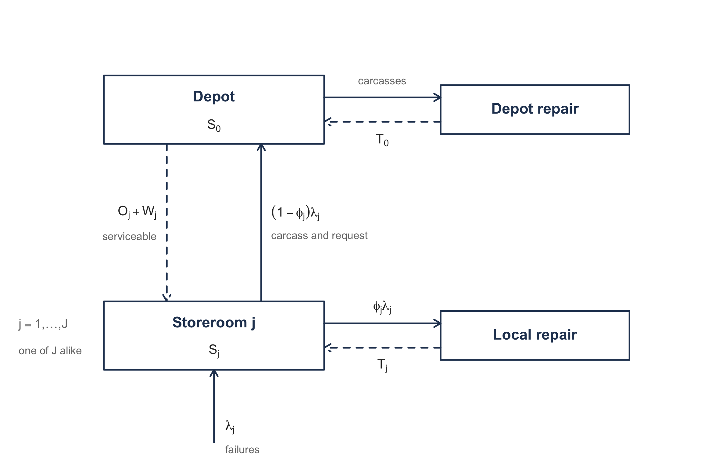
9 Multi-Echelon Inventory Systems
NoteLearning objectives
After reading this chapter you should be able to:
- state the stock positioning problem and explain why it is answered by an inventory policy rather than alongside one
- explain why expensive, slow moving, repairable items are managed one unit at a time
- apply Palm’s theorem to obtain the distribution of the units in resupply at a location
- compute backorders, the ready rate, and on-hand stock for a single location operating a one-for-one policy
- work a coupled depot and base ledger by hand, and read the delay the depot imposes out of it
- apply METRIC to a two-echelon repairable item, and state what it approximates
- improve that approximation with VARI-METRIC, and say what carrying a second moment buys
- allocate a fixed budget across many items by marginal analysis
Section 4.6 introduced echelon inventory, echelon holding cost, and the reorder intervals that minimize cost when demand is known and constant. This chapter keeps the structures and removes that assumption. Echelon accounting carries over unchanged, which is most of the reason it was worth defining; what does not carry over is the idea that a location can be described by a reorder interval alone, since with random demand it needs stock held against the variability as well.
Chapter 8 solved one location. It took the lead time as a property of the supplier, a number the purchasing department could quote. That is the assumption this chapter removes, and removing it is what makes a second location more than a second copy of the first. When the supplier is itself a stocking location, its lead time is not a quoted constant. It is an outcome of its own inventory policy, and it gets worse exactly when the supplier is short.
This chapter works that coupling in its simplest setting: repairable items managed one unit at a time. Recall from Chapter 8 that an order quantity exists because ordering costs money, so demand is accumulated until a batch is worth placing. For an expensive, slow moving repairable item that logic fails, and the location replenishes one unit for each unit demanded. Thus, the demand a location passes up to its supplier is its own demand, arrival for arrival, and nothing stands between the two levels except the supplier’s ability to fill. That is the coupling, and this chapter studies nothing else.
9.1 Where Should the Stock Sit?
Large-scale commercial and military organizations stock items across many locations, at distribution centers and at the sites those centers support. A question arises before any policy can be set for an item: where should it be stocked? The item might be supplied from a single central location, or held at several locations closer to the people who need it. If it is held at several, then the support network between them matters, because some locations act as suppliers to others. This question is the stock positioning problem.
Positioning is not a question about how much inventory to hold but about which locations hold any, and which location replenishes which. Thus, it sits above the models of Chapter 8 rather than beside them.
Yet it cannot be separated from them. If an item is stocked at a location then that location needs an inventory policy, so positioning implies policy setting. The reverse implication matters more. Suppose we solve the policy problem for a forward location and the answer is that the location should hold no units at all. That is more than a small policy: it is the model telling us the location should not be a stocking point, because nothing wants to sit there.
Thus, the answer to “how much” also answers “whether”. That observation organizes the whole chapter. We are going to build machinery that sets policies at two coupled locations, and the reason to build it is that the policies, read correctly, decide the positioning.
9.1.1 Why Two Locations Are Enough
A support network can have many locations and many layers. Analyzing all of them at once is a large problem, and this book does not solve it. Notice that it does not have to in order to be useful.
The essential features of stock positioning appear in the comparison of one location against two, where one of the two supplies the other. That comparison contains the question of whether forward stock is worth holding, the question of what a supplying location owes its customers, and the interaction that makes the two inseparable. A network is then a collection of such pairs, analyzed one pair at a time.
That is the reduction this chapter takes, and it is the one such organizations take in practice. The two-location system has a name, and it is the subject of everything that follows: a two-echelon inventory system.
9.1.2 What Changes When Stock Moves Forward
Recall from Chapter 8 that a single location holds stock for one reason: demand arrives during a lead time and cannot be met from an empty shelf. Moving stock forward changes three things at once, and they do not point the same way.
Forward stock is closer to demand, so it is faster. A unit held at a supported site can be issued immediately. The same unit held at a distribution center has to be picked, packed and shipped first.
Forward stock is less pooled, so there is more of it. Recall from Equation B.12 that aggregating independent demand streams makes the total relatively less variable, since the mean grows with the number of streams and the standard deviation only with its square root. Section B.2.1 named this chapter as the place that fact is spent. For example, one location serving ten supported sites faces the pooled stream. Splitting that stock across ten locations gives up the pooling, and each location then covers its own variability separately.
Forward stock does not remove the need for stock behind it, either. The supplying location still faces demand, now from the locations it supports rather than from end customers, and it still needs a policy.
Thus, positioning trades responsiveness against the total investment needed to achieve it, and the trade is not obvious in either direction. Section 9.9 computes it on real items and finds the answer going both ways depending on the item.
One warning before the machinery starts. It is tempting to decide positioning by rules of thumb: stock fast movers forward, stock slow movers centrally, stock expensive items centrally. Those rules are usually right and they are not always right, and the cases where they fail are the ones to compute. You should treat them as a way to prioritize which items to analyze, and not as the analysis.
Section 9.2 now fixes the setting, and explains why an entire class of items is replenished one unit at a time.
9.2 Ordering One Unit at a Time
Section 8.4 already ran the storeroom’s pad-mount transformer one for one. It set \(Q = 1\), observed that the outstanding orders are exactly the lead time demand, and read the whole model off Equation 8.9. This chapter keeps that policy and changes what stands behind it. Recall that Chapter 8 treated the transformer as consumed: a failed unit left the system and a replacement was purchased. That is not what a utility does with a transformer.
9.2.1 The Item Comes Back
A pad-mount transformer that fails is not scrapped. It is pulled from the pad, a serviceable unit is installed in its place, and the failed unit goes to a shop where it is rewound, retested and returned to stock. At $3,800 a unit that is worth doing, and the same is true of aircraft engines, circuit cards, pumps and locomotive traction motors. An item managed this way is a repairable item, and Sherbrooke (1968) calls it a recoverable item.
That single change has a consequence. A failure is simultaneously two events. It is a demand for a serviceable unit, and it is an arrival of an unserviceable one. The two happen at the same instant and they are the same physical event, so the quantity demanded and the quantity inducted into repair are never different.
Thus, one-for-one replenishment is not a policy choice here but what the item does. Section 8.4 presented \(Q = 1\) as a decision the storeroom made, and for a consumable it is one. For a repairable there is nothing to decide, because the repair pipeline is fed by failures, one failure at a time, and no ordering cost stands between the failure and the induction that could be amortized by waiting. That is why this chapter can carry two levels without carrying an order quantity, and it is the whole reason to start here.
The transformer’s economic order quantity as a consumable is not one. From Table 4.5 it moves \(\lambda = 45\) units a year against an ordering cost of \(k = \$220\) and a holding cost of \(h = 0.25(\$3{,}800) = \$950\) per unit per year, so Equation 3.17 gives
\[ Q^{*} = \sqrt{\frac{2(220)(45)}{950}} = \sqrt{20.84} = 4.57 \]
which rounds to five. Notice that this does not contradict anything. As a consumable the transformer has a batching decision and the answer is five; as a repairable it has no batching decision at all. The population is fixed, and what circulates is the units themselves.
A fixed population is the second consequence. Because failures are repaired rather than replaced, the number of units the system owns does not change as demand is met. Buying more units is a separate and much slower decision, usually made once when the fleet is fielded. Thus, the day-to-day question is not how much to buy. It is where the units the system already owns should sit, which is exactly the stock positioning problem of Section 9.1, and it is now the only question there is.
Two terms are used throughout. A serviceable unit is one that is ready to be issued. An unserviceable unit, often called a carcass, is one that has failed and is awaiting or undergoing repair. A unit is always exactly one of the two, and the sum over both categories and all locations is the fixed population.
9.2.2 The Two Levels
Recall from Section 9.1.1 that this book takes the two-location reduction. For a repairable item the two locations have standard names in the literature, which Sherbrooke (1968) established and everything since has followed: the forward locations are bases and the central location is the depot.
This book says storeroom where that literature says base, and reserves base-stock for the policy of Section 8.4. The two words are unrelated and using both would invite exactly the confusion this chapter cannot afford. Thus, storerooms and a depot, and when you read Sherbrooke (1968) or Muckstadt and Sapra (2010), bases are storerooms.
Figure 9.1 draws the system.
Walk the figure before going on. Start at the bottom. Failures arrive at storeroom \(j\) at rate \(\lambda_j\), and the storeroom issues a serviceable unit if one is on the shelf. Either way a carcass appears, and it is inspected. A fraction \(\phi_j\) of carcasses can be rebuilt at the storeroom, and those travel the lower loop and come back to that storeroom’s own stock after an average repair time \(T_j\). The remaining fraction \(1 - \phi_j\) cannot be rebuilt locally, so the carcass goes up the solid arrow to the depot and the storeroom asks the depot for a serviceable in exchange. Coming back down the dashed arrow, the depot ships one if it has one, and it arrives after an order and ship time \(O_j\) plus however long the request waited at the depot. The depot meanwhile rebuilds what it receives and returns it to depot stock after an average time \(T_0\).
Notice that no arrow leaves the figure and none enters it. That is the fixed population. Contrast it with the consumable systems of Chapter 8, where every arrow eventually traces back to a purchase order. Here the units circulate, and the only question is how many are sitting at each place at any moment.
Notice which delay is the hard one. \(O_j\) is a shipping time and \(T_j\) and \(T_0\) are shop flow times, and all three are properties of the physical system that can be measured. \(W_j\), the wait a request suffers at the depot, is not. It is an outcome of how much stock the depot chose to hold, and it gets longer exactly when the depot is short. That single quantity is what couples the two levels, and the rest of this chapter is built around computing it.
9.2.3 Notation
The chapter indexes the depot by \(0\) and the storerooms by \(j = 1, \ldots, J\). Let
- \(\lambda_j\) represent the failure rate at storeroom \(j\), assumed Poisson,
- \(\phi_j\) represent the fraction of failures at storeroom \(j\) that storeroom \(j\) can repair, so that \(0 \le \phi_j \le 1\),
- \(T_j\) represent the average repair time at storeroom \(j\) for the carcasses it repairs,
- \(O_j\) represent the average order and ship time from the depot to storeroom \(j\),
- \(T_0\) represent the average repair time at the depot,
- \(S_j\) represent the stock level at storeroom \(j\) and \(S_0\) the stock level at the depot, each being the number of units the location holds when nothing is in resupply.
Two rates follow immediately and both are used constantly. The rate at which storeroom \(j\) asks the depot for units is the rate of failures it cannot repair itself,
\[ \lambda_{j0} = (1 - \phi_j)\lambda_j \tag{9.1}\]
and the depot’s own demand rate is the sum of those over the storerooms it supports,
\[ \lambda_0 = \sum_{j=1}^{J}\lambda_{j0} = \sum_{j=1}^{J}(1 - \phi_j)\lambda_j \tag{9.2}\]
Equation 9.1 is the payoff for starting with one-for-one ordering. The stream a storeroom sends up is its own failure stream, thinned by local repair and nothing else. That is, the requests arrive one at a time, at the instants the failures occur, and a thinned Poisson process is Poisson. Thus, the depot faces Poisson demand at rate \(\lambda_0\), and Section 9.7 can treat the depot with the same machinery as a storeroom.
For example, take the utility’s transformer with \(\lambda_j = 45\) failures a year at a storeroom that rebuilds three in ten locally. Then \(\phi_j = 0.3\) and Equation 9.1 gives \(\lambda_{j0} = 0.7(45) = 31.5\) requests a year to the depot. If four such storerooms are supported and all look alike, then Equation 9.2 gives \(\lambda_0 = 4(31.5) = 126\) requests a year.
Compare that with what batching would demand. When a location orders in batches the stream it sends up is not its demand stream at all. Its timing, its size and its variability all have to be derived, and none of them is Poisson. Equation 9.1 is one line because \(Q = 1\).
9.2.4 What Is Being Measured
Chapter 8 chose a policy by minimizing cost, trading a holding rate \(h\) against a backorder rate \(b\). That worked because the storeroom could put a dollar figure on owing a transformer to a waiting crew. For the systems this chapter is aimed at, that figure is usually not available.
The reason is that the item does not fail alone. A repairable part is a component of a system, an aircraft, a locomotive, a substation. For example, a missing part does not cost money directly; it grounds the aircraft. What the organization cares about is availability, the fraction of its systems that are not down waiting for parts, and availability is driven by backorders at the locations where the systems are.
Thus, the objective in this chapter is stated in backorders rather than dollars, and the decision variable is a budget rather than a cost rate. We will compute the expected backorders a set of stock levels produces, and Section 9.9 will spend a fixed sum across many items so as to make the total as small as possible. Notice that money has not disappeared. It has moved from the objective into a constraint, which is the same move Section 4.2 made for the deterministic case.
One measure carries over unchanged, and we name it now. Let \(\bar{B}_j(S_j)\) represent the expected number of backorders outstanding at storeroom \(j\) when it holds stock level \(S_j\). Everything this chapter computes is in service of that one quantity, at the storerooms, where the systems are.
9.2.5 Where This Leaves Us
We have a closed system of circulating units, a policy that holds each location’s inventory position fixed, and a request stream between the levels that is Poisson by Equation 9.1. What we do not yet have is the distribution of the number of units in resupply at a location, and Equation 8.9 says that is the only thing standing between us and every performance measure.
Section 9.3 supplies it, and supplies it exactly. The result is stronger than we have any right to expect: the distribution depends on the repair time only through its mean.
9.3 Palm’s Theorem
Equation 8.9 says that the net inventory at a location is its stock level minus the number of units in resupply. Everything this chapter computes follows from that one identity, so everything depends on knowing the distribution of the number of units in resupply. For a consumable with a constant lead time Equation 8.8 settled it in one line: the units on order are the lead time demand. A repair pipeline is not so obliging. Repair times vary by an order of magnitude between a quick reseat and a full teardown, and the shop does not finish jobs in the order it receives them.
It turns out none of that matters. Recall from Section B.3.3 the result that makes this chapter possible.
Theorem 9.1 (Palm’s theorem) Suppose failures occur in a Poisson process at rate \(\lambda\), and each failure starts a resupply activity whose duration is drawn independently from a distribution with mean \(T\). Let \(X\) represent the number of activities in progress at a random instant in steady state. Then \(X\) has the Poisson distribution with mean \(\lambda T\),
\[ P\{X = x\} = \frac{e^{-\lambda T}(\lambda T)^{x}}{x!} \qquad x = 0, 1, 2, \ldots \tag{9.3}\]
whatever the distribution of the duration may be. (Palm 1938)
Section B.3.3 proves it by conditional uniformity and thinning, and the same statement is the \(M/G/\infty\) occupancy distribution.
9.3.1 Why Distribution-Free Is the Whole Point
Only the mean repair time enters Equation 9.3. Not its variance, not its shape, not whether it is bimodal because half the carcasses need a rewind and half need a bushing. That is a remarkable license, and what it buys is plain once you remember that repair time data is the worst data in this business. For example, a shop can usually tell you its average flow time; it can rarely tell you the distribution, and what it does tell you is contaminated by jobs that sat waiting for a part. Palm’s theorem says we may use the average and stop.
Do not read this as “lead time variability never matters”. Chapter 8 built the opposite lesson, and Equation B.30 inflates the lead time demand variance by \(\mathit{Var}[L](E[D])^{2}\) when the lead time is random. Both are correct, and Section B.3.3 sets them side by side. The separating question is whether an activity started later can finish earlier. Under a single common lead time it cannot, and one long draw stretches everything in the pipe at once. In a repair shop it can, and routinely does, so a long teardown and a quick reseat overlap and the long one delays nothing. Thus, the variability averages away between units rather than accumulating across them.
That is a statement about the physics of the shop rather than a modeling convenience, and you should check that it describes yours before relying on it.
9.3.2 What the Theorem Requires
Three conditions carry Equation 9.3, and the third is the one that fails in practice.
Failures arrive in a Poisson process. Reasonable for a population of independently operating units, and it is the standard assumption for the items this chapter treats.
Durations are drawn independently, one per failure. This is what lets the thinning argument run.
Repair capacity never binds. The \(M/G/\infty\) reading makes this explicit: there are infinitely many servers, so a carcass begins repair the instant it arrives and never queues behind another. Notice that if the shop has three test benches and twelve carcasses show up, the later ones wait, their durations are no longer independent of one another, and Palm’s theorem does not apply. Thus, the model suits a shop sized comfortably above its workload, and it will understate the pipeline for one that is not.
9.3.3 The Pipeline at a Storeroom
Recall from Section 9.2.2 that a carcass at storeroom \(j\) takes one of two routes. Each route is a thinning of the failure stream, so by Section B.3.2 each is itself Poisson, and the two are independent.
The locally repaired units are in progress at rate \(\phi_j\lambda_j\) for an average time \(T_j\). The units sent to the depot are in progress at rate \((1-\phi_j)\lambda_j\) for however long it takes the depot to put a serviceable unit on the storeroom’s shelf, which is the order and ship time \(O_j\) plus the wait \(W_j\) at the depot. We apply Equation 9.3 to each route and add, using the closure of the Poisson family under addition from Section B.2.3, and the number of units in resupply for storeroom \(j\) is Poisson with mean
\[ \mu_j = \underbrace{\phi_j\lambda_j T_j}_{\text{local repair}} + \underbrace{(1-\phi_j)\lambda_j\left(O_j + \bar{W}_j\right)}_{\text{from the depot}} \tag{9.4}\]
where \(\bar{W}_j = E[W_j]\) represents the average wait a request suffers at the depot.
Equation 9.4 is the chapter in one line. Every quantity in it is a measurable property of the physical system except one. \(\bar{W}_j\) is not measurable in advance, because it is produced by how much stock the depot decided to hold. That is, the storeroom’s pipeline, and therefore its backorders, and therefore the availability of the systems it supports, all depend on a decision made at the depot. Thus, the two levels cannot be solved separately, which is what “multi-echelon” means.
Equation 9.4 applies Palm’s theorem slightly outside its warrant, and the rest of the chapter is about that. The theorem wants durations drawn independently. The depot resupply durations are not independent of one another, because two requests arriving while the depot is short both wait on the same missing units. Section 9.7 adopts Equation 9.4 anyway, which is exactly what METRIC does and what makes it an approximation rather than a result. Section 9.8 measures the damage and repairs it.
Example 9.1 (The transformer pipeline at one storeroom) The utility of Example 8.3 now treats the pad-mount transformer as a repairable. A failed transformer is pulled, a serviceable one is installed, and the carcass is inspected. The storeroom’s own shop can rewind three failures in ten; the rest go to the utility’s central depot, which also holds serviceable stock.
What is stocked? One item, the pad-mount transformer, at one of four storerooms.
What is the demand process? Poisson at \(\lambda_j = 45\) failures a year, one unit at a time.
When is inventory reviewed? Continuously.
What triggers replenishment, and how much? Every failure, for one unit, per Section 9.2.1.
What happens to unmet demand? It is backordered. A crew waits.
What costs are incurred, and when? None are needed here. This example computes a pipeline, not a policy.
Notation. Let \(\phi_j = 0.3\) represent the fraction rebuilt locally, \(T_j = 30\) days the average local repair time, and \(O_j = 10\) days the average order and ship time from the depot. Take \(\bar{W}_j = 0\) for the moment, which describes a depot that never makes anyone wait.
The computation. The local stream contributes
\[ \phi_j\lambda_j T_j = (0.3)(45)\left(\frac{30}{365}\right) = 13.5\left(\frac{30}{365}\right) = 1.1096 \text{ units} \]
and the depot stream contributes
\[ (1-\phi_j)\lambda_j\left(O_j + \bar{W}_j\right) = (0.7)(45)\left(\frac{10}{365}\right) = 31.5\left(\frac{10}{365}\right) = 0.8630 \text{ units} \]
so Equation 9.4 gives \(\mu_j = 1.1096 + 0.8630 = 1.9726\) units.
The check. Compute it the other way, as one rate times one average duration. The average resupply duration over both routes is
\[ E[\text{duration}] = (0.3)(30) + (0.7)(10) = 9 + 7 = 16 \text{ days} \]
and \(45(16/365) = 1.9726\) units, which agrees. That check is worth performing every time, because it catches a misplaced \(\phi_j\) immediately, and putting \(\phi_j\) on the wrong stream is the most common error here.
Interpretation. At any moment the storeroom has on average about two transformers away being fixed, and by Equation 9.3 the count is Poisson with that mean, so the standard deviation is \(\sqrt{1.9726} = 1.4045\) units. Notice what that means for stocking. A storeroom that holds nothing serves no crew from the shelf, whatever the pipeline does. If it holds a single spare, that spare is on the shelf exactly when nothing is away being fixed, and \(P\{X = 0\} = e^{-1.9726} = 0.1391\), so a crew arriving to a shelf that has a transformer on it happens fourteen times in a hundred. That is what one spare buys, and it is why the location stocks more than one.
What the depot’s stock does to this. Now suppose the depot is thin enough that a request waits \(\bar{W}_j = 15\) days on average. Only the second term moves:
\[ (0.7)(45)\left(\frac{10 + 15}{365}\right) = 31.5\left(\frac{25}{365}\right) = 2.1575 \text{ units} \]
so \(\mu_j = 1.1096 + 2.1575 = 3.2671\) units, an increase of 65.6 percent. The check holds: \((0.3)(30) + (0.7)(25) = 26.5\) days and \(45(26.5/365) = 3.2671\).
Notice that the storeroom did nothing. Its failure rate did not change, its own shop did not slow down, and its stock level was never mentioned. A decision taken at the depot raised the number of transformers this storeroom has in the air by two thirds, and the storeroom will have to hold more units to absorb it. That is the coupling.
9.3.4 Where This Leaves Us
We have the distribution of the units in resupply, exactly, and it needs only mean repair times. Combined with Equation 8.9 that is enough to compute every performance measure at a single location, and Section 9.4 does so without introducing anything new.
The quantity we do not have is \(\bar{W}_j\). Section 9.6 obtains it, and obtains it from the depot’s own backorders by an argument the book has already made once.
9.4 A Single Location Under One-for-One Ordering
This section introduces no new mathematics, and saying so plainly is the point. Section 8.4 already derived every performance measure for a location holding its inventory position fixed, and Section 9.3 has just supplied the one distribution those measures need. Putting the two together is a substitution.
9.4.1 The Substitution
Recall the derivation behind Equation 8.9. It used two facts and nothing else: the inventory position is held at \(S\), and the units outstanding are those whose resupply has not yet finished. Notice that neither fact says what the resupply is. Chapter 8 had it be a purchase order in transit from a supplier; here it is a carcass on a workbench or a serviceable unit moving down from the depot. The accounting does not care.
Thus, writing \(X_j\) for the number of units in resupply for storeroom \(j\),
\[ \mathit{IN}_j = S_j - X_j \tag{9.5}\]
and Equation 9.3 says \(X_j\) is Poisson with the mean \(\mu_j\) of Equation 9.4. That is the entire model, and Equation 9.5 is Equation 8.9 with the lead time demand replaced by the pipeline.
9.4.2 The Measures
Every result of Section 8.4.1 now transfers by changing the name of the random variable. Using \(G\), \(G^{0}\) and \(G^{1}\) for the distribution function and the loss functions of the Poisson distribution with mean \(\mu_j\), as defined in Section C.3.1, the expected backorder level at storeroom \(j\) is
\[ \bar{B}_j(S_j) = E\left[(X_j - S_j)^{+}\right] = G^{1}(S_j) \tag{9.6}\]
the expected on-hand is
\[ \bar{I}_j(S_j) = S_j - \mu_j + G^{1}(S_j) \tag{9.7}\]
and the ready rate, the fraction of time a serviceable unit is on the shelf, is
\[ \overline{\mathit{RR}}_j(S_j) = P\{X_j \le S_j - 1\} = G(S_j - 1) \tag{9.8}\]
Because failures arrive one at a time in a Poisson process, Equation 8.2 makes the fill rate equal to the ready rate, so the two need not be distinguished in this chapter.
Notice that Equation 9.7 is an identity and not an approximation. Rearranged it says \(\bar{I}_j - \bar{B}_j = S_j - \mu_j\), which is Equation 9.5 in expectation. That rearrangement is the arithmetic check to run on any table of these quantities, and it catches a mis-indexed loss function at once.
9.4.3 What One More Unit Buys
Here is the one result this section does add, and the whole of Section 9.9 rests on it. We ask what the \((S+1)\)st unit at a location is worth, measured in backorders removed, and write
\[ \Delta_j(S_j) = \bar{B}_j(S_j) - \bar{B}_j(S_j + 1) \tag{9.9}\]
Recall from Equation C.11 that the first order loss function is a tail sum of the complementary distribution function, \(G^{1}(b) = \sum_{x \ge b} G^{0}(x)\). We drop one term from the tail sum, which leaves that term, so
\[ \Delta_j(S_j) = G^{0}(S_j) = P\{X_j > S_j\} \tag{9.10}\]
Equation 9.10 reads as a sentence. The next unit removes a backorder exactly when the pipeline would otherwise have exceeded the stock, and the value of that unit is simply the probability that it does. That is, you are paying for a unit and receiving, in expected backorders, the chance that you would have been short without it. Recall Equation 9.8 and notice the same object appearing twice: \(\Delta_j(S_j) = 1 - \overline{\mathit{RR}}_j(S_j+1)\).
Notice that \(G^{0}\) is nonincreasing, because it is a complementary distribution function. Thus, \(\Delta_j(S_j)\) shrinks as \(S_j\) grows: the first unit at a location buys more than the second, which buys more than the third. That is diminishing returns, and it is equivalent to saying \(\bar{B}_j\) is convex in \(S_j\).
Convexity matters here. Section 9.9 has to spend a fixed budget over many items at many locations, and a greedy rule that repeatedly buys whichever unit removes the most backorders per dollar is only defensible if the units get worse as you buy them. Equation 9.10 is the guarantee that they do.
Example 9.2 (Stocking one storeroom with transformers) The item, the storeroom and the pipeline are those of Example 9.1, and nothing about the system has changed, so the modeling questions there have the same answers. Take the depot to be generous, so that \(\bar{W}_j = 0\) and Equation 9.4 gives \(\mu_j = 1.9726\) transformers in resupply on average.
The question. How many transformers should this storeroom hold?
The computation. Equation 9.6 through Equation 9.10 applied to the Poisson distribution with mean \(1.9726\) give Table 9.1.
| \(S_j\) | \(G(S_j)\) | \(\bar{B}_j\) | \(\bar{I}_j\) | \(\overline{\mathit{RR}}_j\) | \(\Delta_j\) |
|---|---|---|---|---|---|
| 0 | 0.1391 | 1.9726 | 0.0000 | 0.0000 | 0.8609 |
| 1 | 0.4135 | 1.1117 | 0.1391 | 0.1391 | 0.5865 |
| 2 | 0.6841 | 0.5252 | 0.5526 | 0.4135 | 0.3159 |
| 3 | 0.8620 | 0.2093 | 1.2367 | 0.6841 | 0.1380 |
| 4 | 0.9498 | 0.0713 | 2.0987 | 0.8620 | 0.0502 |
| 5 | 0.9844 | 0.0211 | 3.0485 | 0.9498 | 0.0156 |
| 6 | 0.9958 | 0.0055 | 4.0329 | 0.9844 | 0.0042 |
The check. Take the row \(S_j = 3\). Then \(\bar{I}_j - \bar{B}_j = 1.2367 - 0.2093 = 1.0274\), and \(S_j - \mu_j = 3 - 1.9726 = 1.0274\). The identity behind Equation 9.7 holds, as it must, and it holds on every row.
A second check, on the marginal column. Equation 9.10 says \(\Delta_j(2) = G^{0}(2) = 1 - G(2) = 1 - 0.6841 = 0.3159\), and the backorder column agrees: \(0.5252 - 0.2093 = 0.3159\). Perform this one too, because it confirms the loss function and the distribution function were evaluated at the same index, which is the error Equation 8.11 warns about.
Interpretation. Read the \(\Delta_j\) column down and the shape of the decision appears. The first transformer removes 0.86 units from the average number owed to waiting crews, the second 0.59, the third 0.32, and the fifth only 0.016. At $3,800 a unit the fifth transformer is buying almost nothing, and the utility would do better spending that $3,800 on a different item or a different storeroom. Notice that we have not needed a backorder cost to see this. We have a ranked list of what each unit buys, and Section 9.9 turns a list like this one into a decision.
Validation against a closed form. If a shortage cost were available the answer would be the critical ratio of Equation 8.15, since Equation 9.5 is Equation 8.9 and the base-stock problem is the newsvendor problem. For example, the \(h = \$950\) and \(b = \$8{,}550\) of Example 8.3 give a ratio of \(8550/9500 = 0.90\), and reading down the \(G(S_j)\) column the first value at or above \(0.90\) is \(0.9498\) at \(S_j = 4\). Thus, four transformers, and the marginal reading agrees that the fourth is the last one that buys much.
Where that stops applying. The critical ratio needs \(b\), and the systems this chapter is aimed at cannot state it, per Section 9.2.4. It also treats this storeroom alone, when in fact the $3,800 competes against every other item at every other storeroom. Both objections are answered the same way, by ranking marginal buys against a budget rather than pricing shortages, and that is what Section 9.9 does.
9.4.4 Where This Leaves Us
One location is solved completely, provided \(\mu_j\) is known. Every number in Table 9.1 followed from it, and the pipeline mean followed from Equation 9.4, which contains \(\bar{W}_j\), which we have been setting to zero.
It is time to stop doing that. Section 9.5 runs a depot and a storeroom together by hand, one month at a time, and watches the wait appear.
9.5 Working Two Levels by Hand
Section 9.4 solved a storeroom completely, on the condition that \(\mu_j\) was known, and Equation 9.4 says \(\mu_j\) contains \(\bar{W}_j\), the wait at the depot. Every example so far has set that wait to zero. This section stops doing that, and it does so before any formula for the wait is offered.
The reason is this. The formulas of Section 9.6 onward produce a number for \(\bar{W}_j\) in one line, and a reader who meets that line first has no way to tell whether it is right or even what it is counting. You should be able to perform by hand the bookkeeping that the worksheet will otherwise perform for you. Thus, we are going to run a depot and a storeroom together and watch the wait appear as a consequence of the depot being empty.
9.5.1 The System and the Rules
The system is Figure 9.1 with one storeroom. The ledger follows the convention of Example 8.1 exactly: one row per event, at the week the event occurs, with the state recorded after that event has been processed. Review is continuous here as it was there, so there are no periods, no buckets and no rule about what happens first within a bucket. Something happens, the books are posted, and the next thing happens whenever it happens.
The stock levels. The storeroom holds \(S_j = 2\) transformers and the depot holds \(S_0 = 2\). That is the entire serviceable population when nothing is in resupply, and by Section 9.2.1 the population never changes.
The times. A carcass rebuilt at the storeroom takes \(T_j = 4\) weeks. A carcass sent to the depot takes \(T_0 = 8\) weeks to repair. A serviceable unit shipped from the depot takes \(O_j = 2\) weeks to arrive.
The failures. Seven transformers fail over the twenty-six weeks observed, in weeks 2, 5, 8, 11, 12, 15 and 17. The two in weeks 5 and 15 are rebuilt at the storeroom; the other five go to the depot. The split is given rather than generated from \(\phi_j\), so the ledger contains no randomness the reader cannot see.
What the columns are. Let \(I_j(t)\) and \(B_j(t)\) represent the storeroom’s on-hand and backorders, and \(X_j(t)\) the units in resupply for the storeroom, counting local rebuilds in progress, shipments in transit, and requests the depot has not yet filled. Let \(I_0(t)\), \(B_0(t)\) and \(X_0(t)\) be the same three at the depot, where \(B_0\) is what the depot owes the storeroom and \(X_0\) is what it has on the bench.
Every one of those is a function of time, not a number per week. \(B_0(t)\) steps up when a request cannot be filled and steps back down when it is, and it holds its value in between. The ledger records it at event epochs because that is where it changes; between two rows it is constant at the value in the upper row. That distinction is dead weight until Section 9.5.3 has to average one of these columns, at which point it decides the answer.
The check to run on every row. The inventory position is held at the stock level, so on-hand minus backorders plus resupply is \(S\) at all times. Thus,
\[ X_j = S_j - I_j + B_j \qquad\text{and}\qquad X_0 = S_0 - I_0 + B_0 \tag{9.11}\]
Equation 9.11 is Equation 9.5 rearranged. Compute the resupply columns two ways on every row, once by counting what is actually out there and once from the identity, and stop when they disagree.
9.5.2 The Ledger
Both locations begin full: two serviceable transformers at the storeroom, two at the depot, nothing on a bench, nothing owed.
Week 2. A transformer fails. The storeroom has two on the shelf, issues one, and is left with one. The carcass goes to the depot, which is simultaneously a request. The depot has two serviceable units, ships one, and is left with one. That shipment will arrive in week 4. The carcass goes on the depot bench and will be repaired in week 10.
Week 4. The shipment arrives and the storeroom is back to two on the shelf. Notice that the storeroom’s resupply column has returned to zero, and that the depot’s has not: the carcass is still on the bench.
Week 5. A second transformer fails and is issued, leaving one on the shelf. This carcass is rebuilt locally, so it never reaches the depot and will be back on the storeroom’s own shelf in week 9.
Week 8. A third failure empties the shelf. The storeroom still owes nobody anything; every failure so far has been met on the day it happened. The carcass goes to the depot, which has one serviceable unit, ships it, and is left with none. That shipment arrives in week 10, and the carcass will be repaired in week 16.
Week 9. The local rebuild started in week 5 returns, putting one transformer back on the storeroom shelf.
Week 10. Two unrelated things happen in the same week at different places. At the depot, the carcass inducted in week 2 finishes repair and becomes a serviceable unit in depot stock. At the storeroom, the shipment sent in week 8 arrives, restoring the shelf to two.
The table has been updated as follows.
| Week | Event | \(I_j\) | \(B_j\) | \(X_j\) | \(I_0\) | \(B_0\) | \(X_0\) |
|---|---|---|---|---|---|---|---|
| 0 | start | 2 | 0 | 0 | 2 | 0 | 0 |
| 2 | failure, request to depot | 1 | 0 | 1 | 1 | 0 | 1 |
| 4 | shipment arrives | 2 | 0 | 0 | 1 | 0 | 1 |
| 5 | failure, rebuilt locally | 1 | 0 | 1 | 1 | 0 | 1 |
| 8 | failure, request to depot | 0 | 0 | 2 | 0 | 0 | 2 |
| 9 | local rebuild returns | 1 | 0 | 1 | 0 | 0 | 2 |
| 10 | depot repair completes | 1 | 0 | 1 | 1 | 0 | 1 |
| 10 | shipment arrives | 2 | 0 | 0 | 1 | 0 | 1 |
Ten weeks in, three transformers have failed and every one was replaced from a shelf on the day it failed. Both locations look healthy. Notice, though, that the depot has been holding at most one spare since week 2, and that it has filled every request out of that one unit.
Week 11. A fourth failure. The shelf falls to one, and the carcass goes up. The depot has exactly one serviceable unit, ships it, and is empty. That shipment arrives in week 13; the carcass is due off the bench in week 19.
Week 12, where the luck runs out. A fifth failure, one week after the fourth. The storeroom issues its last transformer and the shelf is empty, but it still owes nobody. The carcass goes up as a request, and the depot has nothing to ship. It records a backorder. From this instant \(B_0(t) = 1\), and it will stay 1 until the depot can put a unit against it.
Notice what is now in the storeroom’s resupply column: one shipment in transit, and one request that no serviceable unit anywhere in the system has been assigned to. Equation 9.11 gives \(2 - 0 + 0 = 2\), and both items are counted.
Week 13. The shipment sent in week 11 arrives, so the storeroom has one on the shelf again. The depot’s backorder is untouched by this; the two are different units.
Week 15. A sixth failure takes the shelf back to zero. This one is rebuilt locally and will return in week 19.
Week 16. The carcass inducted in week 8 comes off the depot bench. The depot owes the storeroom one unit from week 12, so the repaired unit goes straight out as a shipment rather than onto the depot’s shelf. \(B_0(t)\) falls back to 0. That backorder lasted from week 12 to week 16, four weeks. The shipment will arrive at the storeroom in week 18.
Week 17. A seventh failure arrives at an empty shelf, and the storeroom records its first backorder. A crew is waiting. The carcass goes up, the depot is empty again, and it records a backorder too, so \(B_0(t)\) returns to 1.
The table has been updated as follows.
| Week | Event | \(I_j\) | \(B_j\) | \(X_j\) | \(I_0\) | \(B_0\) | \(X_0\) |
|---|---|---|---|---|---|---|---|
| 0 | start | 2 | 0 | 0 | 2 | 0 | 0 |
| 2 | failure, request to depot | 1 | 0 | 1 | 1 | 0 | 1 |
| 4 | shipment arrives | 2 | 0 | 0 | 1 | 0 | 1 |
| 5 | failure, rebuilt locally | 1 | 0 | 1 | 1 | 0 | 1 |
| 8 | failure, request to depot | 0 | 0 | 2 | 0 | 0 | 2 |
| 9 | local rebuild returns | 1 | 0 | 1 | 0 | 0 | 2 |
| 10 | depot repair completes | 1 | 0 | 1 | 1 | 0 | 1 |
| 10 | shipment arrives | 2 | 0 | 0 | 1 | 0 | 1 |
| 11 | failure, request to depot | 1 | 0 | 1 | 0 | 0 | 2 |
| 12 | failure, request backordered | 0 | 0 | 2 | 0 | 1 | 3 |
| 13 | shipment arrives | 1 | 0 | 1 | 0 | 1 | 3 |
| 15 | failure, rebuilt locally | 0 | 0 | 2 | 0 | 1 | 3 |
| 16 | depot repair completes, ships against the backorder | 0 | 0 | 2 | 0 | 0 | 2 |
| 17 | failure backordered, request backordered | 0 | 1 | 3 | 0 | 1 | 3 |
Week 18. The shipment the depot sent in week 16 arrives. The storeroom owes one unit, so it goes straight to the waiting crew rather than onto the shelf. \(B_j(t)\) returns to 0. The storeroom’s backorder lasted one week.
Week 19. Two things again. The carcass inducted in week 11 comes off the depot bench and goes straight out against the week-17 backorder, so \(B_0(t)\) falls to 0 after two weeks. The local rebuild started in week 15 also returns, putting one transformer on the storeroom shelf.
Week 20. The carcass inducted in week 12 is repaired. Nothing is owed now, so for the first time since week 11 the depot has a unit on its own shelf.
Week 21. The shipment sent in week 19 arrives and the storeroom is back to two. Week 25. The last carcass is repaired and the depot is back to two. The system has returned to where it started, which it must, because the population is fixed.
The table has been updated as follows, and this is the completed ledger.
| Week | Event | \(I_j\) | \(B_j\) | \(X_j\) | \(I_0\) | \(B_0\) | \(X_0\) |
|---|---|---|---|---|---|---|---|
| 0 | start | 2 | 0 | 0 | 2 | 0 | 0 |
| 2 | failure, request to depot | 1 | 0 | 1 | 1 | 0 | 1 |
| 4 | shipment arrives | 2 | 0 | 0 | 1 | 0 | 1 |
| 5 | failure, rebuilt locally | 1 | 0 | 1 | 1 | 0 | 1 |
| 8 | failure, request to depot | 0 | 0 | 2 | 0 | 0 | 2 |
| 9 | local rebuild returns | 1 | 0 | 1 | 0 | 0 | 2 |
| 10 | depot repair completes | 1 | 0 | 1 | 1 | 0 | 1 |
| 10 | shipment arrives | 2 | 0 | 0 | 1 | 0 | 1 |
| 11 | failure, request to depot | 1 | 0 | 1 | 0 | 0 | 2 |
| 12 | failure, request backordered | 0 | 0 | 2 | 0 | 1 | 3 |
| 13 | shipment arrives | 1 | 0 | 1 | 0 | 1 | 3 |
| 15 | failure, rebuilt locally | 0 | 0 | 2 | 0 | 1 | 3 |
| 16 | depot repair completes, ships | 0 | 0 | 2 | 0 | 0 | 2 |
| 17 | failure backordered, request backordered | 0 | 1 | 3 | 0 | 1 | 3 |
| 18 | shipment arrives, clears the crew | 0 | 0 | 2 | 0 | 1 | 3 |
| 19 | depot repair completes, ships | 0 | 0 | 2 | 0 | 0 | 2 |
| 19 | local rebuild returns | 1 | 0 | 1 | 0 | 0 | 2 |
| 20 | depot repair completes | 1 | 0 | 1 | 1 | 0 | 1 |
| 21 | shipment arrives | 2 | 0 | 0 | 1 | 0 | 1 |
| 25 | depot repair completes | 2 | 0 | 0 | 2 | 0 | 0 |
9.5.3 What the Ledger Establishes
The identity held on every row, at both levels. Read down \(X_j\) against \(2 - I_j + B_j\), and \(X_0\) against \(2 - I_0 + B_0\). Forty checks, forty agreements. That is Equation 9.11 doing the work Equation 9.5 promised, and it is the only thing standing between a hand ledger and an undetected arithmetic error.
The storeroom was short once, and it was not its own doing. Run the ledger again with a depot that never makes anyone wait, so that every request ships the instant it is made. The week-12 request then arrives in week 14 instead of week 18, the shelf holds two transformers from week 14 and one from week 15, and the week-17 failure is met from stock. The storeroom’s only backorder disappears. Its failures did not change, its own shop did not change, and its stock level was never touched. The backorder was manufactured at the depot and delivered.
9.5.3.1 Averaging a Column That Is a Function of Time
Now measure the wait, and here the callout of Section 9.5.1 comes due.
\(B_0(t)\) is a step function. It is 0 from week 0 to week 12, 1 from week 12 to week 16, 0 from week 16 to week 17, 1 from week 17 to week 19, and 0 from week 19 to the end. Its average is an average over time, weighted by how long it held each value, and not the average of the numbers appearing in the \(B_0\) column. Those numbers are samples at the instants the process happened to change, and there are more of them in a busy fortnight than in a quiet month.
Weighting by duration,
\[ \bar{B}_0 = \frac{1(16-12) + 1(19-17)}{26} = \frac{4 + 2}{26} = \frac{6}{26} = 0.2308 \text{ units} \]
The numerator deserves a name. Six backorder-weeks were accumulated, in the sense that one unit was owed for four weeks and then one unit for two more.
Now we compute the wait a second way, by following the requests. Five requests reached the depot. Three were filled on arrival and waited nothing. The week-12 request waited until week 16, which is four weeks, and the week-17 request waited until week 19, which is two. Thus,
\[ \bar{W}_j = \frac{0+0+0+4+2}{5} = \frac{6}{5} = 1.20 \text{ weeks} \]
Now we divide the time average by the arrival rate. The depot received five requests in twenty-six weeks, so \(\lambda_0 = 5/26\) per week, and
\[ \frac{\bar{B}_0}{\lambda_0} = \frac{6/26}{5/26} = \frac{6}{5} = 1.20 \text{ weeks} \]
The two agree, and the reason they agree is visible in the arithmetic. Both are the same six backorder-weeks divided by the same five requests. One route reached it by sweeping along the time axis and weighting each level by its duration; the other reached it by sweeping across the requests and adding each one’s wait. The six is an area either way, counted in rows or in columns.
That is Little’s Law, in the one setting where you can see the whole of it at once. Section 9.6 states it in general and uses it on quantities no ledger will ever produce, but it is the same identity, and nothing in the general statement is doing anything this ledger has not already done by hand.
Had we averaged the \(B_0\) column instead of the time axis, the answer would have been wrong, and it would have been wrong in a way that is hard to notice. The column holds twenty entries, of which five are 1, giving 0.25 rather than 0.2308. That number is not an average of anything the system did. It is an average over the events the ledger happened to record, and a ledger with more rows in the quiet stretches would have produced a different one. Whenever a quantity carries \((t)\), integrate it; do not average the rows.
9.5.4 Where This Leaves Us
The ledger has produced the missing quantity, but only for twenty-six weeks of one realization. We cannot run a ledger for every item at every storeroom, and we cannot run one at all for a system that has not been built yet.
Section 9.6 replaces it with the relation the two computations above just agreed on, which the book has already proved once and which holds for any arrival process at all.
9.6 The Delay the Depot Imposes
Section 9.5 produced \(\bar{W}_j\) for twenty-six weeks of one realization by counting request-weeks on paper. This section obtains it for any system, from a formula, and the formula is one the book has already proved.
9.6.1 The Depot Is a Single Location
Before computing the wait, notice something about the depot that Figure 9.1 has been showing all along.
The depot’s demand is Poisson. By Equation 9.1 each storeroom’s requests are its own failure stream thinned by local repair, and a thinned Poisson process is Poisson. The depot sees the superposition of \(J\) such streams, and by Section B.3.2 a superposition of independent Poisson processes is Poisson at the sum of the rates. Thus the depot faces Poisson demand at the rate \(\lambda_0\) of Equation 9.2.
The depot replenishes one for one. Every request arrives with a carcass, and the carcass goes on the bench the moment it arrives. That is a resupply activity started by a demand, one for one, exactly as at a storeroom.
The depot waits for nobody. Its supplier is its own repair shop, which by the third condition of Section 9.3.2 has capacity to spare. There is no further echelon behind it and no wait to look up.
Thus Theorem 9.1 applies to the depot with no qualification whatever, and the number of units in resupply at the depot is Poisson with mean
\[ \mu_0 = \lambda_0 T_0 \tag{9.12}\]
Everything in Section 9.4 now applies to the depot unchanged. Its expected backorders are \(\bar{B}_0(S_0) = G^{1}(S_0)\) by Equation 9.6, evaluated on the Poisson distribution with mean \(\mu_0\).
Notice what is absent from Equation 9.12. No \(S_j\), no \(O_j\), no \(T_j\), no \(\phi_j\) except through \(\lambda_0\). The depot’s own performance does not depend on how much stock the storerooms hold, or how fast they ship, or how well they are doing. Thus, the depot can be solved first, once, and on its own, and the storerooms then follow from it. There is no circle to iterate around.
That is a property of one-for-one ordering, and batching would lose it: the stream a location passes up would then depend on the order quantity it chose, which depends in turn on the lead time the supplier gives it, and a fixed point would have to be found.
9.6.2 From Backorders to a Wait
Recall from Section B.4.3 that Equation B.24 relates the average number in a system, the arrival rate into it, and the average time an arrival spends there, and that it assumes almost nothing.
We take the system to be the set of requests the depot has accepted but not yet filled. Arrivals into that system are requests the depot cannot fill on the spot, departures are the shipments that clear them, the average number in it is the depot’s average backorder level \(\bar{B}_0\), and the rate at which requests present themselves is \(\lambda_0\). Thus
\[ \bar{W} = \frac{\bar{B}_0(S_0)}{\lambda_0} \tag{9.13}\]
This is the relation the ledger verified. Section 9.5.3.1 computed six backorder-weeks over twenty-six weeks against five requests and got 1.20 weeks twice, once by following requests and once by dividing a time average by a rate. Equation 9.13 is that second route, written for a system rather than for one realization.
The wait does not carry a storeroom subscript. The depot clears its backorders in the order they arrived, without regard to which storeroom raised them, so a request from a large storeroom waits no longer than one from a small storeroom. Thus \(\bar{W}_j = \bar{W}\) for every \(j\), and Equation 9.4 becomes
\[ \mu_j = \phi_j\lambda_j T_j + (1-\phi_j)\lambda_j\left(O_j + \bar{W}\right) \tag{9.14}\]
with a single \(\bar{W}\) shared by all of them. The storerooms still differ, through \(\phi_j\), \(T_j\), \(O_j\) and \(\lambda_j\); what they do not differ in is the delay the depot imposes.
Equation 9.13 gives the average wait over all requests, including the ones filled immediately, which wait nothing. It is not the average wait of the requests that were delayed. In Section 9.5 two requests of five waited, for four weeks and two weeks, so the delayed requests averaged three weeks while Equation 9.13 reports 1.20. Both numbers are correct and they answer different questions. Equation 9.14 wants the first, because it is multiplying by the rate of all requests.
9.6.3 What a Unit at the Depot Buys
Recall from Equation 9.10 that one more unit at a location reduces its expected backorders by \(G^{0}\) evaluated at the current level. We apply that to the depot and divide by \(\lambda_0\): the reduction in the wait from the \((S_0+1)\)st unit is
\[ \bar{W}(S_0) - \bar{W}(S_0+1) = \frac{G^{0}(S_0)}{\lambda_0} \tag{9.15}\]
Thus, the delay falls with depot stock, and falls by less with every unit added. That is Section 9.4.3 read at the upper level, and it means the depot’s stock level faces the same diminishing returns as a storeroom’s.
It is not the same decision, however. A unit added at a storeroom helps that storeroom. A unit added at the depot shortens \(\bar{W}\), which by Equation 9.14 shrinks the pipeline at every storeroom at once. That asymmetry is what makes multi-echelon stocking a subject of its own, and Section 9.9 is where the two kinds of unit are made to compete on even terms.
Example 9.3 (What the depot’s stock does to four storerooms) The utility of Example 9.1 supports four storerooms alike, each seeing \(\lambda_j = 45\) failures a year and rebuilding \(\phi_j = 0.3\) of them locally. The central depot repairs what it receives in \(T_0 = 60\) days on average.
The depot’s demand. By Equation 9.1 each storeroom sends up \(0.7(45) = 31.5\) requests a year, and by Equation 9.2 the depot sees \(\lambda_0 = 4(31.5) = 126\) requests a year.
The depot’s pipeline. By Equation 9.12,
\[ \mu_0 = 126\left(\frac{60}{365}\right) = 20.7123 \text{ units} \]
so the depot has about twenty-one transformers on benches at any moment. Notice that this is an order of magnitude larger than the 1.97 units in a storeroom’s pipeline, which is what a central location looks like.
The delay, against depot stock. Equation 9.6 and Equation 9.13 applied to the Poisson distribution with mean \(20.7123\) give Table 9.3.
| \(S_0\) | \(\bar{B}_0\) | \(\bar{W}\) (days) | \(\mu_j\) | \(\bar{B}_j\) at \(S_j=4\) |
|---|---|---|---|---|
| 16 | 5.0201 | 14.54 | 3.2276 | 0.4055 |
| 18 | 3.4443 | 9.98 | 2.8337 | 0.2638 |
| 20 | 2.1763 | 6.30 | 2.5167 | 0.1748 |
| 22 | 1.2550 | 3.64 | 2.2863 | 0.1238 |
| 24 | 0.6565 | 1.90 | 2.1367 | 0.0964 |
| 26 | 0.3105 | 0.90 | 2.0502 | 0.0825 |
Reading the table across. At \(S_0 = 16\) the depot makes a request wait 14.54 days on average, which is close to the fifteen days Example 9.1 supposed, so that illustration was a depot holding about sixteen units. Feeding 14.54 days into Equation 9.14,
\[ \mu_j = 1.1096 + 31.5\left(\frac{10 + 14.54}{365}\right) = 1.1096 + 2.1180 = 3.2276 \]
The check. Equation 9.15 says the seventeenth depot unit should shorten the wait by \(G^{0}(16)/\lambda_0 = 0.8217/126\) years, which is 2.38 days. Reading the table, 14.54 at \(S_0 = 16\) against 12.16 at \(S_0 = 17\), not shown but computed the same way, is a drop of 2.38 days. The marginal relation and the table agree, as they must, and that check is worth running because it confirms the loss function and the distribution function were evaluated at the same index.
Interpretation. Six extra transformers at the depot, from sixteen to twenty-two, cut the delay from 14.5 days to 3.6 and cut a storeroom’s pipeline from 3.23 units to 2.29. Those six units did that at all four storerooms simultaneously, so the backorders in the last column fall by about seventy percent at each of the four, for one purchase of six. Eight units bought at the storerooms, two apiece, would have done something comparable by forward stocking alone, and six against eight is the pooling comparison that Section 9.9 makes exactly.
Where this stops being obvious. The same six units are the most expensive six in the table by the measure that matters, because they are the ones that sit at the depot doing nothing for anyone until a request arrives. Whether they belong there or at the storerooms is exactly the stock positioning question of Section 9.1, and nothing so far decides it. Section 9.9 does, by making every candidate unit at every location compete on backorders removed per dollar.
9.6.4 Where This Leaves Us
Every quantity in Equation 9.14 is now available. Equation 9.12 gives the depot’s pipeline from rates and a repair time, Section 9.4 turns that into \(\bar{B}_0(S_0)\), Equation 9.13 turns that into \(\bar{W}\), and Equation 9.14 turns that into each storeroom’s pipeline.
Section 9.7 collects those four steps into a procedure, runs it on a system, and then does the thing this chapter has been postponing since Section 9.3.3: it examines the assumption the procedure rests on, and finds it wanting.
9.7 METRIC
Section 9.6 left four steps standing in a row. This section gives them a name, runs them, and then asks what they are worth.
The name is METRIC, the Multi-Echelon Technique for Recoverable Item Control, and it is due to Sherbrooke (1968). It is the earliest of the repairable-item models still in use, it is the ancestor of every model in this chapter, and Sherbrooke (2004) is the book-length treatment.
9.7.1 The Procedure
metric(S_0, S_1 ... S_J):
// Step 1, the demand the depot faces
for each storeroom j:
lambda_j0 <- (1 - phi_j) * lambda_j
lambda_0 <- sum over j of lambda_j0
// Step 2, the depot's pipeline, then its backorders
mu_0 <- lambda_0 * T_0
Bbar_0 <- G1(S_0), on the Poisson distribution with mean mu_0
// Step 3, the delay the depot imposes on everybody
Wbar <- Bbar_0 / lambda_0
// Step 4, each storeroom in turn
for each storeroom j:
mu_j <- phi_j*lambda_j*T_j + (1 - phi_j)*lambda_j*(O_j + Wbar)
Bbar_j <- G1(S_j), on the Poisson distribution with mean mu_j
return Bbar_0, Bbar_1 ... Bbar_JNotice that Algorithm 9.1 has no loop in it. It is a straight line from rates to answers, and it runs in time proportional to the number of storerooms. That is the dividend of Section 9.6.1: the depot’s own performance does not depend on the storerooms, so step 2 never has to be revisited once step 4 has run. Nothing here is iterated to a fixed point, nothing is solved simultaneously, and there is no convergence to worry about.
Notice also what Algorithm 9.1 does not do. It does not choose \(S_0\) or any \(S_j\). It evaluates a stocking plan handed to it, which is why its arguments are stock levels and its returns are backorders. Section 9.9 supplies the search, and it will call Algorithm 9.1 many times.
Example 9.4 (METRIC on the utility’s transformers) Take the system of Example 9.3 entire. Four storerooms, each seeing \(\lambda_j = 45\) failures a year and rebuilding \(\phi_j = 0.3\) of them in \(T_j = 30\) days, an order and ship time of \(O_j = 10\) days, and a depot repairing what it receives in \(T_0 = 60\) days. The utility proposes to hold \(S_0 = 16\) transformers at the depot and \(S_j = 4\) at each storeroom, twenty units in all.
What is stocked? One item at five locations, the pad-mount transformer.
What is the demand process? Poisson at 45 failures a year at each storeroom, one unit at a time.
When is inventory reviewed? Continuously, at every location.
What triggers replenishment, and how much? Every failure, for one unit, at both levels.
What happens to unmet demand? It is backordered, at the storeroom against a waiting crew and at the depot against a waiting storeroom.
What costs are incurred, and when? None are needed. Algorithm 9.1 returns backorders.
Step 1. Each storeroom passes up \(0.7(45) = 31.5\) requests a year, so \(\lambda_0 = 4(31.5) = 126\) a year.
Step 2. The depot’s pipeline is \(\mu_0 = 126(60/365) = 20.7123\) units, and the first order loss function of the Poisson distribution with that mean, evaluated at \(S_0 = 16\), gives \(\bar{B}_0 = 5.0201\) units.
Step 3. The delay is \(\bar{W} = 5.0201/126 = 0.03984\) years, which is 14.54 days.
Step 4. Each storeroom’s pipeline is
\[ \mu_j = (0.3)(45)\left(\frac{30}{365}\right) + (0.7)(45)\left(\frac{10 + 14.54}{365}\right) = 1.1096 + 2.1180 = 3.2276 \text{ units} \]
and the loss function at \(S_j = 4\) gives \(\bar{B}_j = 0.4055\) backorders. Across four storerooms that is \(4(0.4055) = 1.6218\) transformers owed to waiting crews at any moment (the product taken before rounding).
The check. Run Equation 9.7 on a storeroom: \(\bar{I}_j = 4 - 3.2276 + 0.4055 = 1.1779\), so \(\bar{I}_j - \bar{B}_j = 0.7724\) and \(S_j - \mu_j = 4 - 3.2276 = 0.7724\). The identity holds, and it is worth running at both levels every time.
Interpretation. Twenty transformers, of which sixteen sit at a depot where no crew can reach them, leave about 1.6 crews waiting at any moment across the utility. Whether that is acceptable, and whether the twenty are in the right places, are the questions Section 9.9 answers. What we have is a number attached to a plan, which is what was missing.
9.7.2 What METRIC Approximates
Section 9.3.3 warned that Equation 9.4 applies Palm’s theorem outside its warrant. That debt now comes due, and paying it turns out to be the most useful thing in the chapter, because the model fails in a specific and repairable way that has been understood since the model was published.
Every mean METRIC computes is exact, and that deserves establishing before anything is criticized. The depot’s pipeline really is Poisson with mean \(\lambda_0 T_0\), because Theorem 9.1 applies there without qualification. Thus \(\bar{B}_0\) is exact, and \(\bar{W}\) is exact because Equation B.24 assumes nothing. The storeroom’s pipeline mean is exact too, for the same reason: Little’s Law applied to the storeroom’s own resupply says \(E[X_j] = \lambda_j E[\text{resupply duration}]\), and averaging that duration over the two routes gives Equation 9.14 with no independence assumed anywhere.
What is not exact is the claim that \(X_j\) is Poisson. A Poisson distribution has its variance equal to its mean, and it is here that the model asserts something it has not earned. Recall the reason from Section 9.3.2: Palm’s theorem wants each unit’s resupply duration drawn independently. The depot-routed durations are not independent. Two requests arriving while the depot is empty both wait for the same repairs to finish, so their delays move together. That is, the count is more variable than a Poisson count with the same mean.
None of this is new. It was known to the model’s author at the time, and Sherbrooke (1968) says so plainly in the paper that introduced it. Looking back on it eighteen years later, Sherbrooke (1986) writes that “when the METRIC model was developed, it was clear that it understated base backorders. In most cases the error was not large, and the simplicity of METRIC seemed to overshadow the lack of precision.”
The direction of the error is the unsafe one, and the reason is precise. Backorders are a tail quantity, so a distribution that is too tight produces too few of them. Sherbrooke (1986) states the consequence for the whole family of models built this way: they “understate the multi-echelon delay in the resupply of a base from a depot that has backorders”, and thus “tend to understate expected backorders and overstate expected availability of repair items”. A utility sizing its spares with Algorithm 9.1 will believe it is doing better than it is.
How much does it matter? Graves (1985) answers this by comparing the stock levels the two models choose rather than the backorders they report, which is the comparison a planner actually cares about. Sherbrooke (1986) reports the result: “Graves shows that in 11% of cases, the METRIC stock levels differ by at least one unit from the optimal results; the VARI-METRIC levels differ in only 1%.” Notice that he immediately qualifies it, and the qualification is the more useful half: “the 10-fold improvement of VARI-METRIC is probably more meaningful than the actual percentages, which depend on the number of bases, mean demands over the repair time, and other input values.”
Thus, the size of the error is a property of METRIC applied to a particular system rather than of METRIC itself, and a system with more storerooms, or a leaner depot, will show more of it.
The error is not in the mean, so it cannot be fixed by adjusting one. A common instinct on meeting a gap of this kind is to inflate a lead time or pad a rate until the answer matches. Do not. The means above are already right; it is the second moment that is missing, and a fudge to the first moment will break the agreement that does exist while only approximately repairing the one that does not. It will also fail on the next item, for the reason Sherbrooke (1986) gives: the size of the gap depends on the system.
9.7.3 Where This Leaves Us
We have a procedure, it is fast, it has no loop, and every mean it produces is exact. What it does not produce is a variance, and that omission makes it optimistic about backorders by an amount that depends on the system.
The diagnosis names the cure, and Sherbrooke (1986) puts it in one sentence: “METRIC is a first-order model using mean values only, whereas VARI-METRIC is a second-order model incorporating variances as well.” If the pipeline’s variance is the thing METRIC is missing, then compute the variance and use a distribution that can hold a variance larger than its mean. Section 9.8 does exactly that, following the derivation Graves (1985) published for the purpose.
9.8 VARI-METRIC
Section 9.7.2 left the model with exact means and a distribution that is too tight. The repair is to compute the variance the model was throwing away and to use a distribution that can hold it.
That repair is VARI-METRIC. It is due to Slay (1980), Graves (1985) published the short derivation this section follows, and Sherbrooke (1986) extended it and is the source for the numbered results quoted below.
9.8.1 Splitting the Depot’s Backorders
The whole method turns on one question. The depot owes \(B_0\) units at a random instant. How many of them are owed to storeroom \(j\)?
Recall from Section 9.6.2 that the depot fills requests in the order they arrive, without regard to who sent them. Thus, each outstanding backorder came from storeroom \(j\) with probability equal to storeroom \(j\)’s share of the depot’s demand, and the backorders are labeled independently of one another. Let
represent that share. Then, conditional on the depot owing \(B_0\) units in total, the number owed to storeroom \(j\) is binomial with \(B_0\) trials and success probability \(f_j\).
This is a proved result rather than an assumption made for convenience. Sherbrooke (1986) records that “Simon (1971) and Graves have shown that the number of units in resupply at base \(I\), conditional on the total number of units in resupply at all bases, has a binomial distribution when the original demand process is Poisson.”
We write \(B_{0j}\) for the units the depot owes storeroom \(j\). The binomial gives \(E[B_{0j} \mid B_0] = f_j B_0\) and \(\mathit{Var}[B_{0j} \mid B_0] = f_j(1-f_j)B_0\), and applying Equation B.8 we obtain
\[ E[B_{0j}] = f_j\bar{B}_0, \qquad \mathit{Var}[B_{0j}] = f_j(1-f_j)\bar{B}_0 + f_j^{2}\,\mathit{Var}[B_0] \tag{9.17}\]
Read the two terms of that variance separately, because they are different things. The first is the randomness in which storeroom each backorder belongs to, given how many there are. The second is the randomness in how many there are, scaled down by \(f_j^2\) because storeroom \(j\) receives only its share of any fluctuation. Notice that METRIC keeps neither.
9.8.2 The Pipeline’s Two Moments
The storeroom’s pipeline splits into two independent pieces. The units in local repair and the units in transit from the depot have independent durations and are thinnings of a Poisson process, so Theorem 9.1 applies to them exactly and their count is Poisson with mean equal to its variance. The units the depot owes but has not shipped are \(B_{0j}\), and Equation 9.17 has just supplied its moments. Adding the two pieces, we obtain
\[ \mu_j = \lambda_j\left[\phi_j T_j + (1-\phi_j)O_j\right] + f_j\bar{B}_0 \tag{9.18}\]
\[ \sigma_j^{2} = \lambda_j\left[\phi_j T_j + (1-\phi_j)O_j\right] + f_j(1-f_j)\bar{B}_0 + f_j^{2}\,\mathit{Var}[B_0] \tag{9.19}\]
Equation 9.18 is Equation 9.14 written differently. Recall that \(\bar{W} = \bar{B}_0/\lambda_0\), so \(f_j\bar{B}_0 = (\lambda_{j0}/\lambda_0)\bar{B}_0 = \lambda_{j0}\bar{W} = (1-\phi_j)\lambda_j\bar{W}\), which is the term METRIC already had. Thus VARI-METRIC changes no mean anywhere, and that is the reason the two models can be compared at all: they are fitted to the same first moment and differ only in what they do with the second.
Equation 9.19 is Equation 9.18 plus two terms. If we set those two terms to zero we get \(\sigma_j^2 = \mu_j\), which is the Poisson assumption. Thus, METRIC is this model with the last two terms discarded rather than a different model, which is what Sherbrooke (1986) means by calling it “a first-order model using mean values only”.
9.8.3 The Depot’s Backorder Variance
Equation 9.19 needs \(\mathit{Var}[B_0]\), which needs the second moment of the backorder function. We define \(E[B^{2}(s)] = \sum_{x > s}(x-s)^{2}g(x)\), the second moment of the shortfall at stock level \(s\). Sherbrooke (1986) gives a recursion for it, which he attributes to Michael Konvalinka of the Logistics Management Institute:
\[ E[B^{2}(s)] = E[B^{2}(s-1)] - E[B(s)] - E[B(s-1)], \qquad s \ge 1 \tag{9.20}\]
started from \(E[B^{2}(0)] = E[X^{2}]\), which for the Poisson pipeline of the depot is \(\mu_0 + \mu_0^{2}\). Then
\[ \mathit{Var}[B_0] = E[B^{2}(S_0)] - \bar{B}_0^{2} \tag{9.21}\]
Equation 9.20 is preferable to summing the series. It walks up from \(s = 0\) one stock level at a time using only quantities the first order loss function has already produced, so the whole table of \(E[B^2(s)]\) costs one pass. Notice that it subtracts, so it loses precision at large \(s\) where \(E[B^2]\) is small; if you need it far out in the tail, sum directly and compare.
9.8.4 Fitting a Distribution to Two Moments
We now have \(\mu_j\) and \(\sigma_j^2\) with \(\sigma_j^2 > \mu_j\), and we need a distribution. Recall from Section C.1.2 that the negative binomial is “the family to reach for when \(\mathit{VMR} > 1\)”, with \(\mathit{VMR} = 1/p\) for every admissible \(p\). Matching Equation C.3 to our two moments,
\[ p = \frac{\mu_j}{\sigma_j^{2}}, \qquad \beta = \frac{1-p}{p}, \qquad r = \frac{\mu_j}{\beta} \tag{9.22}\]
and \(X_j\) is taken to have that negative binomial distribution. Every measure of Section 9.4 then applies unchanged, evaluated on this distribution instead of a Poisson.
Why this family and not another with the right two moments? Section C.1.2 gives the reading that answers it: a negative binomial is a Poisson whose rate is itself random, drawn from a gamma distribution. That is exactly the situation here. Each storeroom’s pipeline would be Poisson if the depot delay were a fixed quantity, and what spoils it is that the delay varies. Notice that this is not an analogy bolted on afterwards. It is the title of the paper that introduced the method: Slay (1980) is “An Approach to Modeling Multi-Echelon Resupply when the Demand Process is Poisson with a Gamma Prior”.
Sherbrooke (1986) adds the practical reasons, that the negative binomial “has a variance that is never less than its mean, is discrete and is easy to compute recursively”.
In practice the test is not \(\sigma_j^2 > \mu_j\) but a band around one. Equation 9.22 divides by \(1 - p\), and \(p \to 1\) as the variance approaches the mean, so a ratio of 1.001 produces a number of successes in the thousands and a negative binomial that is a Poisson in everything but arithmetic. The software of Section 9.11 therefore fits the negative binomial only when \(\sigma_j^2/\mu_j > 1.1\), takes a Poisson inside the band, and takes a gamma below it. Notice that the last branch exists because nothing rules out an under-dispersed pipeline, as the warning below records.
Thus a storeroom can be described by a Poisson at two quite different points: a depot so generous that it never delays anybody, and a depot so bare that its delay swamps everything else. The negative binomial earns its place in between.
One step here rests on evidence rather than proof, and the authors say so. The fit needs \(\sigma_j^2 > \mu_j\), or Equation 9.22 returns nonsense. Sherbrooke (1986) reports that “extensive calculations by us (and Graves) indicate that if \(x\), the number of units in resupply/repair, is Poisson, then the function \(\mathit{Var}[B(s)]/E[B(s)]\) is unimodal and greater than one, except for \(s = 0\)”, and then states plainly: “neither Graves or we have been able to supply a proof.”
Thus the method is known to work and is not known to be safe. In practice you should test the ratio before fitting rather than assume it: inside the band the Poisson of Section 9.7 is the fit, and below the band, which the authors’ own statement says happens at \(s = 0\), a gamma carries the two moments.
9.8.5 The Procedure
varimetric(S_0, S_1 ... S_J):
// Steps 1 to 3 are METRIC, unchanged
lambda_0 <- sum over j of (1 - phi_j)*lambda_j
mu_0 <- lambda_0 * T_0
Bbar_0 <- G1(S_0), on the Poisson distribution with mean mu_0
// Step 3a, NEW: the depot's backorder variance
EB2 <- mu_0 + mu_0^2 // s = 0
for s = 1 to S_0:
EB2 <- EB2 - G1(s) - G1(s-1) // recursion above
VarB_0 <- EB2 - Bbar_0^2
// Step 4, each storeroom, now to two moments
for each storeroom j:
f_j <- (1 - phi_j)*lambda_j / lambda_0
base <- lambda_j*( phi_j*T_j + (1 - phi_j)*O_j )
mu_j <- base + f_j*Bbar_0
sigma2_j <- base + f_j*(1 - f_j)*Bbar_0 + f_j^2*VarB_0
c <- sigma2_j / mu_j
if c >= 1.1:
fit negative binomial to (mu_j, sigma2_j)
else if c > 0.9:
use Poisson with mean mu_j // the band around one
else:
fit gamma to (mu_j, sigma2_j) // under-dispersed
Bbar_j <- G1(S_j), on that distribution
return Bbar_0, Bbar_1 ... Bbar_JNotice how little changed. Algorithm 9.2 is Algorithm 9.1 with one extra loop over the depot’s stock levels and two extra terms in the storeroom calculation. It still has no fixed point to find, it still runs in one pass, and it still evaluates a plan rather than choosing one. Sherbrooke (1986) makes the same point about cost: “the VARI-METRIC computation is only slightly more complicated than that of METRIC, since it requires an estimate of the variance as well of the mean of the backorders at each stage and the use of a negative binomial distribution rather than a Poisson.”
Example 9.5 (VARI-METRIC on the utility’s transformers) Take the system of Example 9.4 unchanged: four storerooms at \(\lambda_j = 45\) failures a year, \(\phi_j = 0.3\) rebuilt locally in \(T_j = 30\) days, \(O_j = 10\) days to ship, a depot repairing in \(T_0 = 60\) days, and the proposed plan \(S_0 = 16\) with \(S_j = 4\) at each storeroom.
The modeling questions have the same answers as in Example 9.4, since the system has not changed. Only the model has.
Steps 1 to 3, unchanged. \(\lambda_0 = 126\) a year, \(\mu_0 = 20.7123\) units, and \(\bar{B}_0 = 5.0201\) units at \(S_0 = 16\).
Step 3a, the depot’s backorder variance. Starting from \(E[B^2(0)] = 20.7123 + 20.7123^2 = 449.7129\) and running Equation 9.20 up to \(s = 16\) gives \(E[B^2(16)] = 41.8229\). Thus by Equation 9.21,
\[ \mathit{Var}[B_0] = 41.8229 - (5.0201)^{2} = 41.8229 - 25.2015 = 16.6215 \]
Notice that the depot’s backorders are far more variable than their mean, a variance-to-mean ratio of \(16.6215/5.0201 = 3.31\). That is the quantity METRIC discards, and it is the reason discarding it matters.
Step 4, the storerooms. All four are alike, so \(f_j = 31.5/126 = 0.25\). The Poisson part is
\[ \lambda_j\left[\phi_j T_j + (1-\phi_j)O_j\right] = 45\left[\frac{(0.3)(30) + (0.7)(10)}{365}\right] = 45\left(\frac{16}{365}\right) = 1.9726 \]
which is exactly the pipeline of Example 9.1 when the depot never delayed, as it should be. Then Equation 9.18 gives
\[ \mu_j = 1.9726 + (0.25)(5.0201) = 1.9726 + 1.2550 = 3.2276 \text{ units} \]
the same figure Example 9.4 reached, and Equation 9.19 gives
\[ \sigma_j^{2} = 1.9726 + (0.25)(0.75)(5.0201) + (0.25)^{2}(16.6215) = 1.9726 + 0.9413 + 1.0388 = 3.9527 \]
The fit. By Equation 9.22, \(p = 3.2276/3.9527 = 0.8166\), so \(\beta = 0.1834/0.8166 = 0.2246\) and \(r = 3.2276/0.2246 = 14.3674\). The variance-to-mean ratio is \(1/p = 1.2246\).
The answer. The first order loss function of that negative binomial at \(S_j = 4\) gives \(\bar{B}_j = 0.4815\) backorders, against METRIC’s 0.4055. Across four storerooms, 1.9259 transformers owed to waiting crews rather than 1.6218.
The check. Equation 9.7 holds whatever the distribution, since it is an identity: \(\bar{I}_j = 4 - 3.2276 + 0.4815 = 1.2539\), and \(\bar{I}_j - \bar{B}_j = 1.2539 - 0.4815 = 0.7724\), which is \(S_j - \mu_j = 4 - 3.2276\). Run it on both models, because it is the one relation that must agree between them, the means being shared.
Interpretation. VARI-METRIC reports about 19 percent more backorders than METRIC on the same plan, and the whole of that difference came from the two terms in Equation 9.19. Notice that the plan did not change and the system did not change. What changed is that the model now admits it does not know how long a request will wait, only what that wait averages.
The direction is not accidental. Sherbrooke (1986) states that VARI-METRIC “produces an estimate of backorders that exceeds that of METRIC in all cases except when stock levels are zero (when the two models agree)”. Thus, wherever the two differ, VARI-METRIC is the pessimistic one, and the extra backorders it reports are ones METRIC was concealing rather than ones VARI-METRIC invented.
9.8.6 Where This Leaves Us
We can evaluate a stocking plan across two echelons, to two moments, in one pass, and we know from Section 9.7.2 roughly what that is worth against choosing the plan by METRIC instead.
What we still cannot do is choose the plan. Every example in this chapter has been handed \(S_0\) and \(S_j\) from outside, and the interesting question has been sitting underneath them since Section 9.1: with a fixed sum to spend, how many units go to the depot and how many to each storeroom? Section 9.9 answers it, using the marginal result Equation 9.10 established for exactly this purpose.
9.9 Spending a Budget Across Items
Every example in this chapter has been handed its stock levels. Algorithm 9.1 and Algorithm 9.2 both take \(S_0\) and the \(S_j\) as arguments and return backorders, which means they evaluate a plan rather than produce one. This section produces one.
9.9.1 What Is Being Chosen, and Against What
The decision variables are a stock level at the depot and one at each storeroom, for every item in the range. For example, a utility with nine repairable items and four storerooms is choosing forty-five numbers, and they are not independent of one another because they compete for the same money.
The objective is the one argued for in Section 9.2.4: minimize the total expected backorders at the storerooms,
\[ \mathit{EBO} = \sum_{\text{items}}\;\sum_{j=1}^{J}\bar{B}_j(S_j) \tag{9.23}\]
subject to the total cost of the units bought not exceeding a budget. Let \(c_j\) represent the unit cost of the item stocked at storeroom \(j\), and \(c_0\) its unit cost at the depot. Thus, one item’s plan costs \(c_0 S_0 + \sum_{j=1}^{J} c_j S_j\), and the budget applies to that sum taken over every item in the range.
Notice that \(\bar{B}_0\) does not appear in Equation 9.23. A backorder at the depot costs nothing directly, because no crew is waiting at a depot. It costs by lengthening \(\bar{W}\), which by Equation 9.14 inflates every storeroom’s pipeline, which raises the storeroom backorders that Equation 9.23 does count. Thus, depot stock is valued entirely for what it does four hundred miles away rather than for what it does at the depot, and that is what makes this a multi-echelon optimization rather than five separate ones.
9.9.2 Marginal Analysis
The technique is marginal analysis, and Sherbrooke (2004) reports that “while it is likely that the technique has been used for many years, the earliest published reference appears to be O. Gross (1956)” (Gross 1956).
For each item and each location, compute the delta value: the reduction in expected backorders that the next unit would buy, divided by what that unit costs. Recall from Equation 9.10 that the reduction itself is \(G^{0}(S)\), so for an item costing \(c\) the delta value at stock level \(S\) is
\[ \delta(S) = \frac{\bar{B}(S) - \bar{B}(S+1)}{c} = \frac{G^{0}(S)}{c} \tag{9.24}\]
Then buy repeatedly, at each step taking the candidate with the largest delta value, until the budget runs out. Sherbrooke (2004) calls this “the increase in system effectiveness per dollar”, and notes drily that “recent references sometimes refer to the technique as the ‘greedy heuristic’, hardly an improvement.”
The procedure is only defensible if the delta values decline as you buy. Section 9.4.3 established that they do at a single location, because \(G^{0}\) is a complementary distribution function and therefore nonincreasing. That is the convexity of \(\bar{B}(S)\), and Sherbrooke (2004) makes the same argument: “since the expected backorder function is convex, the marginal analysis values are non-increasing”, and “it is easy to show that the sum of convex functions is convex.”
Were that not so, the procedure would go wrong in a specific way. Sherbrooke states it: “the problem with marginal analysis that looks only one step ahead is that there may be other items whose values are between” the true two-step improvement and the understated one-step improvement, and “those item stock levels will be augmented prematurely.”
9.9.3 Two Echelons Break the Convexity
At two echelons it is not so. This is the one place in the chapter where the machinery built so far does not simply extend.
Fix the depot’s stock and vary a storeroom’s, and everything is convex, for the single-location reason. But the depot’s stock is a decision too, and moving it changes \(\bar{W}\), which moves every storeroom’s pipeline at once. Sherbrooke (2004) puts it exactly: “each row of Table 3.3 is convex, because the marginal analysis procedure is identical with Chapter 2. But as we move from one level of depot stock to another in the optimal solutions, there is no assurance of convexity.”
Table 9.4 shows it happening on the chapter’s own item. For each total number of transformers bought, it reports the best split between the depot and the four storerooms, the expected backorders that split produces, and the reduction the last unit bought.
| Units bought | \(S_0\) | Units at storerooms | \(\mathit{EBO}\) | Reduction |
|---|---|---|---|---|
| 10 | 10 | 0 | 18.6080 | 0.9967 |
| 11 | 11 | 0 | 17.6154 | 0.9927 |
| 12 | 8 | 4 | 16.6266 | 0.9888 |
| 13 | 9 | 4 | 15.6433 | 0.9833 |
| 14 | 10 | 4 | 14.6587 | 0.9846 |
| 15 | 11 | 4 | 13.6817 | 0.9770 |
| 16 | 12 | 4 | 12.7166 | 0.9651 |
| 17 | 13 | 4 | 11.7696 | 0.9470 |
| 18 | 14 | 4 | 10.8490 | 0.9206 |
| 19 | 15 | 4 | 9.9647 | 0.8842 |
| 20 | 12 | 8 | 9.1088 | 0.8559 |
| 21 | 13 | 8 | 8.2462 | 0.8627 |
Read the Reduction column looking for an increase. The thirteenth transformer removes 0.9833 backorders and the fourteenth removes 0.9846, which is more. The same thing happens at the twentieth and twenty-first. A procedure that buys by comparing one-step improvements will undervalue this item at exactly those two points, and will spend money on something else instead.
Precision about which point is the bad one matters, because it is easy to name the wrong row. The reduction rising at total 14 means that total 13 lies above the straight line joining 12 and 14, so 13 is the plan that is never worth buying. Check it: \((16.6266 + 14.6587)/2 = 15.6427\), which is below the 15.6433 the table reports at 13.
The fix is to refuse to stop there. Sherbrooke (2004): the non-convex points “are easily dealt with by excluding them as potential solutions”, and “by dropping the interior points, the marginal analysis will jump to the next convex point at the correct time, buying at least two more units of stock of the item because of the eliminated interior point or points.” Applied to Table 9.4, totals of 13 and 20 are struck out, so the procedure moves from 12 units straight to 14 and from 19 straight to 21, buying two at a time and quoting the average of the two reductions as its delta value. This step is called convexification.
9.9.4 Flushout
Now read the same table’s \(S_0\) column, and notice something that ought to be impossible.
| Units bought | 10 | 11 | 12 | 13 | … | 19 | 20 | 21 |
|---|---|---|---|---|---|---|---|---|
| Best \(S_0\) | 10 | 11 | 8 | 9 | 15 | 12 | 13 |
The optimal depot stock falls as the total rises. For example, going from eleven transformers to twelve, the depot’s holding drops from eleven to eight, and four units appear at the storerooms. The utility bought one more transformer and the right answer was to move three of the ones it already had out of the depot. It happens again at twenty, where the depot gives up three more.
Sherbrooke (2004) names this: “after three units of stock have been allocated optimally to depot and more stock is available for allocation, it becomes optimal to take some of that depot stock and flush it out to the bases.” He calls the phenomenon flushout, and notes that it is most common when the bases are alike, which is why the four storerooms here were made identical.
The reason can be worked out rather than accepted. Depot stock is pooled, and Section 9.1.2 said pooled stock is efficient. Recall from Equation 9.13 that a unit at the depot buys \(G^{0}(S_0)/\lambda_0\) off the delay, and the delay is divided among four storerooms, so each gets a quarter of it. A unit at a storeroom is not pooled and helps only that storeroom, but it helps immediately and it is on the right shelf. While the depot is nearly empty the pooling dominates, because the delay it removes is enormous. Once the depot is comfortable the delay it still has left to remove is small, and a unit does more good sitting where a crew can reach it.
Thus, the model answers the stock positioning question of Section 9.1, and answers it as a function of the budget. Not “should this item be forward stocked?” but “forward stocked at what level of total investment?”, which is a better question and is the one a utility can act on. Notice also that the answer is not monotone, so it cannot be read off a rule of thumb of the kind Section 9.1.2 warned about.
9.9.5 Across Items
Everything so far concerned one item. Items are combined by the same rule, with the reductions divided by unit cost as Equation 9.24 requires. Sherbrooke (2004) is explicit that this division is what makes them comparable: “when we combine across items, the backorder reductions (first differences) must be divided by unit cost.”
Suppose the utility also stocks a voltage regulator at $9,500, failing 12 times a year at each storeroom, of which it rebuilds a fifth locally in 45 days, with a depot repair time of 90 days and the same ten day shipment from the depot. Table 9.5 follows the merged buy sequence, each row taking whichever item offers the larger delta value.
| Step | Bought | \(\delta\) per $1,000 | Cumulative spend | \(\mathit{EBO}\), transformer | \(\mathit{EBO}\), regulator |
|---|---|---|---|---|---|
| 1 | transformer | 0.2632 | $3,800 | 27.6027 | 11.7041 |
| 13 | transformer, two | 0.2589 | $53,200 | 14.6587 | 11.7041 |
| 19 | transformer, two | 0.2261 | $79,800 | 8.2462 | 11.7041 |
| 28 | transformer | 0.1148 | $114,000 | 2.5852 | 11.7041 |
| 29 | regulator | 0.1053 | $123,500 | 2.5852 | 10.7042 |
| 33 | regulator | 0.1009 | $161,500 | 2.5852 | 6.7655 |
| 34 | transformer | 0.0988 | $165,300 | 2.2096 | 6.7655 |
| 35 | regulator | 0.0958 | $174,800 | 2.2096 | 5.8556 |
| 37 | transformer | 0.0834 | $188,100 | 1.8929 | 5.0230 |
| 39 | regulator | 0.0766 | $201,400 | 1.5952 | 4.2949 |
| 41 | regulator | 0.0734 | $214,700 | 1.3122 | 3.5973 |
Read the delta column down. It never rises, which is the whole point of convexification: without it, steps 13 and 19 would have quoted understated deltas and the regulator would have been bought too early.
Read the first twenty-eight steps, too. Not one regulator is purchased until $114,000 has gone into transformers. That is arithmetic, not a judgment about regulators. The transformer removes about a quarter of a backorder per thousand dollars at the start and the regulator about a tenth, because the transformer fails nearly four times as often and costs less than half as much per unit. Notice that a planner reasoning by unit price alone would have bought regulators first, on the grounds that they are the expensive item and therefore the important one.
9.9.6 The Procedure
allocate(budget, items):
for each item:
// Step 1, the two-echelon curve for this item alone
for S_0 = 0, 1, 2, ... up to a sensible bound:
Wbar <- depot delay at S_0 // alg-varimetric steps 1-3a
for n = 0, 1, 2, ... units across storerooms:
spread n over the storerooms by marginal analysis
EBO[S_0][n] <- total storeroom backorders
// Step 2, best split for each total, then convexify
for each total T:
curve[T] <- min over S_0 + n = T of EBO[S_0][n]
drop every T whose reduction exceeds the reduction before it
// Step 3, delta values for what survives
for each surviving step of curve:
delta <- (EBO drop) / (units bought * unit cost)
// Step 4, merge the items
spent <- 0
while spent + cost of the best next buy <= budget:
take the item whose next delta is largest
buy its next step; add its cost to spent
return the stock levels reached, and the EBO-versus-cost curve tracedWhat Algorithm 9.3 returns is not one answer but a curve. Every step of the merge is an efficient plan for the money spent up to that point, so the output is the whole schedule of backorders against budget. That is more useful than a single plan, because the budget is usually not fixed until someone has seen what the money buys. A utility that sees Table 9.5 can ask whether the step from $114,000 to $123,500 is worth it, which is a question it can answer and the model cannot.
The last buy can overshoot the budget badly. If the final unit selected is an expensive one, the plan costs materially more than the budget allowed. Sherbrooke (2004) gives the remedy in a footnote: take the stock levels reached after the overshoot as minimum levels, rerun the procedure, and repeat if necessary. Notice that this is the integrality of the problem rather than a defect in marginal analysis, and it is the same overshoot that made Equation 7.13 a rule about the first level at or above a ratio rather than an equality.
9.9.7 Where This Leaves Us
The chapter is now closed. Section 9.1 asked where stock should sit and argued that the answer would come out of a policy calculation rather than alongside one. Table 9.4 is that answer, arriving as a column of a table whose purpose was to choose stock levels, and behaving in a way no rule of thumb would have produced.
What remains is practice. Section 9.10 builds these calculations in a worksheet, and Section 9.11 says what changes when the same calculations have to run over forty thousand items.
9.10 Building These Models in a Worksheet
The workbook is Chapter9Models.xlsx. The sheets of Section 8.16 each held one location, and the difference here is that two locations have to agree with one another. Thus the sheets are ordered the way Section 9.6.1 says the chapter can solve them: the depot first and on its own, then a storeroom that reads from it, then the allocation across both.
Four working sheets, plus a Notes sheet that says what the others are for.
9.10.1 The Depot
Depot is Section 9.3 and Section 9.6. The rates block at the top turns the item and the network into \(\lambda_0\) and \(\mu_0 = \lambda_0 T_0\), and the block below walks one row per unit of pipeline.
Three of its four columns are the ones Section 8.16.2 already used, and they need no function Excel does not have. \(G\) comes from POISSON.DIST with the cumulative flag, \(G^{0}\) is its complement, and \(G^{1}\) is the recursion of Equation C.13 filled down.
The fourth column is new, and it is the one VARI-METRIC needs. Equation 9.20 is a recursion of exactly the same shape, so it costs one more column:
E21: =$B$13+$B$13^2
E22: =E21-D22-D21the first cell being \(\mu_0 + \mu_0^{2}\) and every cell after it subtracting the two loss values on its own row and the row above. Notice that this is the whole of the extra work VARI-METRIC asks of a worksheet at the depot. Everything else on the sheet METRIC needed too.
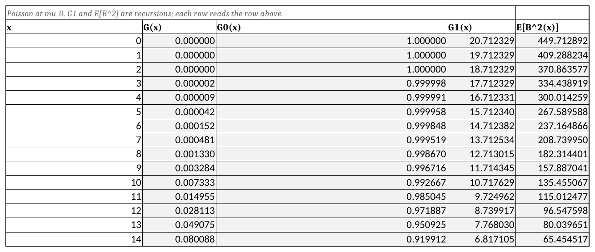
Depot sheet. One row per unit of pipeline, and every row reads the row above it. Notice that the first order column steps down by \(G^{0}\) of the row above, while the second moment column steps down by two loss values rather than one. Notice also that \(G^{1}\) starts at \(\mu_0\) and \(E[B^{2}]\) at \(\mu_0 + \mu_0^{2}\), which are the two quantities the recursions have to be told.
The policy block then reads out of the columns by position, so the depot’s stock level is the only thing typed:
B17: =INDEX($D$21:$D$81,$B$16+1)
B18: =INDEX($E$21:$E$81,$B$16+1)-B17^2which are \(\bar{B}_0\) and \(\mathit{Var}[B_0]\) at \(S_0\), the offset of one turning a stock level into a row.
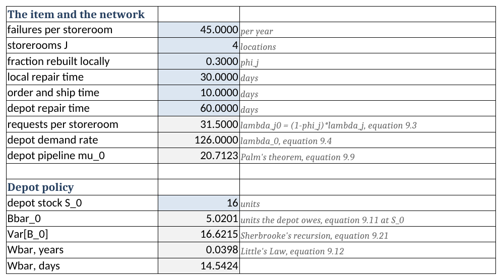
Depot sheet above its loss block. The six blue cells are the only ones typed, and the depot stock level is the only decision among them. Notice that the four figures beneath it are the whole of what a storeroom needs from the depot: at \(S_0 = 16\) the sheet reads 5.0201 units owed, a variance of 16.6215, and a delay of 14.54 days, which are the figures of Example 9.3. Notice too that nothing on this sheet mentions a storeroom.
9.10.2 One Storeroom
Storeroom is Section 9.7 and Section 9.8 side by side. It reads \(\bar{B}_0\) and \(\mathit{Var}[B_0]\) off the Depot sheet, forms \(\mu_j\) and \(\sigma_j^{2}\) from Equation 9.18 and Equation 9.19, and fits the negative binomial by Equation 9.22.
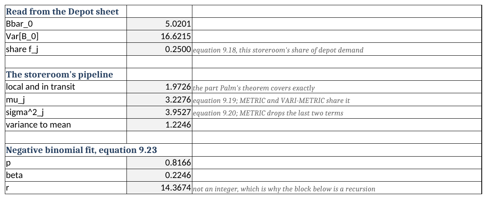
Storeroom sheet. Nothing here is typed; the two figures at the top are read across from the Depot sheet. Notice that the pipeline splits into the part Palm’s theorem covers exactly, 1.9726 units, and the part the depot contributes, and that only the second carries any of the variance beyond its own mean. The variance-to-mean ratio of 1.2246 is the whole of the difference between the two models.
METRIC closes in one cell. Recall that the Poisson first order loss function can be written with the distribution function twice over, \(G^{1}(s) = \mu(1 - F(s-1)) - s(1 - F(s))\), so no block is needed:
B33: =IF(B32=0,B22,B22*(1-POISSON.DIST(B32-1,B22,TRUE))
-B32*(1-POISSON.DIST(B32,B22,TRUE)))The guard on \(S_j = 0\) is needed. POISSON.DIST rejects a negative first argument, and \(G^{1}(0)\) is \(\mu_j\).
VARI-METRIC does not close in one cell, and the reason matters. The fitted \(r\) is 14.3674 and not an integer, and NEGBINOM.DIST truncates that argument to a whole number. A sheet that used it would quietly compute the wrong distribution and report a plausible answer. So the sheet does not use it. It builds the mass function from its own recursion instead, which needs nothing but arithmetic:
B38: =$B$27^$B$29
B39: =B38*($B$29+A39-1)/A39*(1-$B$27)that is, \(g(0) = p^{r}\) and \(g(x) = g(x-1)\,\frac{r+x-1}{x}(1-p)\), and then walks \(G^{0}\) and \(G^{1}\) up the block exactly as the Poisson block does. The sum of the mass column sits at the bottom and should read 1; that is the check that the block was walked far enough.
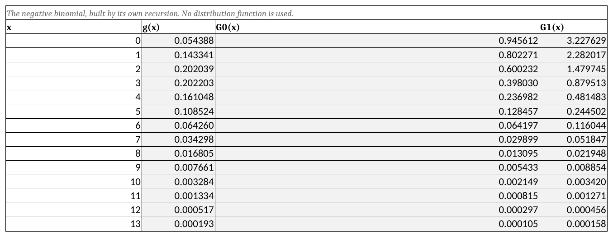
Storeroom sheet. Compare it with Figure 9.2 and notice that only the first two columns differ. The mass column is a recursion in place of POISSON.DIST, and the two loss columns are then walked by the same rule at both levels, because the loss functions do not care which family produced the mass.
One cell on the sheet exists only to be looked at:
B37: =B36-B34-(B32-B22)which is Equation 9.7 rearranged. It is an identity, so it reads zero whatever the model, and if it ever does not, the fit or the block is wrong.
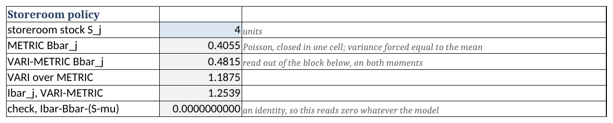
9.10.3 The Allocation
Allocate is Section 9.9. Since the storerooms are alike, a plan is a depot level and one common storeroom level, so the sheet can lay the whole search out flat: one row per total number of units, one column per way of splitting that total.
Column \(B\) is the split that puts everything at the depot, column \(C\) gives each storeroom one unit, and so on. Each cell recomputes \(\mu_j\) for its own depot level by reaching into the Depot sheet,
B8: =Depot!$B$6*((Depot!$B$5*(Depot!$B$7*Depot!$B$8+(1-Depot!$B$7)
*Depot!$B$9)/365+INDEX(DepotLoss,1)/Depot!$B$6))where DepotLoss is a defined name for the \(G^{1}\) column. Then three cells do the choosing:
I8: =MIN(B8:H8)
J8: =MATCH(I8,B8:H8,0)-1
K8: =A8-Depot!$B$6*J8the best expected backorders for that total, the storeroom level that achieved it, and the depot level implied.
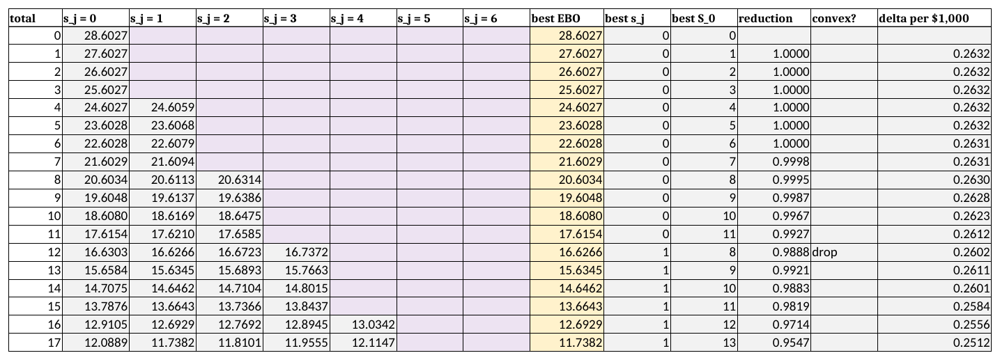
Allocate sheet. Each row is a total number of units and each of the seven columns is a way of splitting it, with the blank cells marking splits that would need a negative depot stock. Read the best \(S_0\) column down. It climbs to 11 and then drops to 8, which is flushout: buying the twelfth transformer makes it right to move three of the eleven already at the depot out to the storerooms. Notice that total 12 is itself flagged “drop”, because the reduction on the row beneath it, 0.9921, is the larger.
Flushout is on the sheet, in the best \(S_0\) column, exactly as Section 9.9.4 described it.
The last three columns are the reduction, a flag, and the delta value. The flag is the one piece of Section 9.9.3 a worksheet can do for you:
M9: =IF(OR(L9="",L10=""),"",IF(L10>L9,"drop",""))Notice which row the flag lands on. A total lies off the convex curve when the reduction on the row below it is the larger, so the formula looks forward, not back. Writing it the other way round marks the row after the offending plan, which reads plausibly and strikes out the wrong one. That is the non-convexity of Table 9.4 showing up as a word in a column. The sheet marks them; striking them out and merging across items is left to you, because a worksheet cannot sort a list it is also computing.
9.10.4 The Ledger
Ledger is Section 9.5 with the arithmetic wired in. The on-hand and backorder columns at both levels are typed and everything else is a formula, so Equation 9.11 is enforced rather than trusted:
E5: =2-C5+D5
I5: =E5-(2-C5+D5)the first being the resupply column and the second a residual that reads zero on every row.
The sheet carries one column the chapter’s table did not, and it is there for the reason Section 9.5.3.1 labored:
K5: =A6-A5
B27: =SUMPRODUCT(G5:G23,K5:K23)K is how long each event’s state was held, and the depot’s backorder-weeks are the level column dotted with it. Notice that averaging column G instead would have been one shorter formula and the wrong answer. The sheet makes the weighting visible so that the wrong version is harder to write.
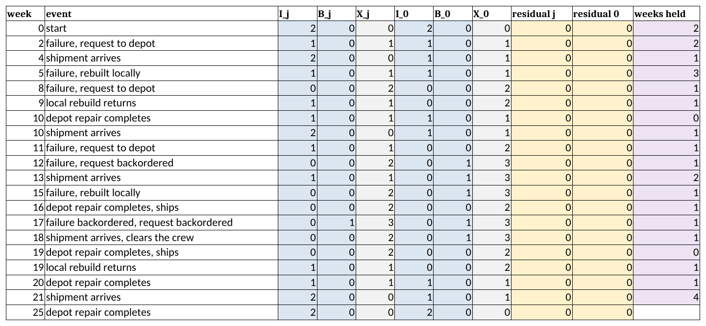
Ledger sheet. The blue columns are typed and the rest are formulas, so the two residual columns read zero on all twenty rows. Notice the weeks-held column on the right, and notice that it is not constant: week 10 holds its state for no time at all because a second event follows it, and week 21 holds its state for four weeks. Averaging the \(B_0\) column would weight those two equally, which is the error Section 9.5.3.1 exists to prevent.
9.10.5 Solving a Problem on the Sheets
Example 9.6 (Pricing a repair contract) The depot’s repair shop offers the utility a contract. For a fee, it will hold the average turnaround on a pad-mount transformer at 45 days instead of the present 60. Nothing else about the system changes: the same four storerooms, the same 45 failures a year at each, the same three in ten rebuilt locally, the same ten day shipment. The utility currently holds \(S_0 = 16\) at the depot and \(S_j = 4\) at each storeroom.
What is the contract worth, and how would a utility find out?
The modeling questions have the answers of Example 9.4, since the system is that one. What follows is what you type and what comes back, not a derivation.
Step 1, the baseline. Open Depot and confirm cell B16 holds 16, then open Storeroom and confirm B32 holds 4. Read B34: 0.4815 backorders at this storeroom, so \(4(0.4815) = 1.9259\) across the four.
Step 2, the contract. On Depot, type 45 into B10, the depot repair time. One number, on a sheet that never mentions a storeroom. Then read down both sheets:
| Cell | What it is | Before | After |
|---|---|---|---|
Depot!B13 |
\(\mu_0\) | 20.7123 | 15.5342 |
Depot!B17 |
\(\bar{B}_0\) | 5.0201 | 1.3500 |
Depot!B20 |
\(\bar{W}\), days | 14.54 | 3.91 |
Storeroom!B22 |
\(\mu_j\) | 3.2276 | 2.3101 |
Storeroom!B34 |
\(\bar{B}_j\) | 0.4815 | 0.1523 |
Across four storerooms the expected backorders fall from 1.9259 to 0.6091, a reduction of 68 percent. Notice that a quarter cut in the depot’s repair time removed two thirds of the waiting, and notice where the gain came from: the delay fell by a factor of nearly four, because Equation 9.13 divides a backorder level that is itself falling steeply.
Step 3, what the same improvement costs in stock. Put 60 back into B10. Now buy the reduction instead of contracting for it, by typing larger values into Depot!B16 and watching Storeroom!B34.
Depot!B16 |
16 | 18 | 20 | 21 | 22 |
|---|---|---|---|---|---|
Depot!B20, days |
14.54 | 9.98 | 6.30 | 4.84 | 3.64 |
Storeroom!B34 |
0.4815 | 0.3280 | 0.2199 | 0.1807 | 0.1501 |
At \(S_0 = 22\) the storeroom reaches 0.1501, which is past the contract’s 0.1523. Six more transformers at the depot do what the contract does.
Step 4, the price. Six transformers at $3,800 is $22,800 of capital, and at the carrying charge \(\gamma = 0.25\) of Table 4.5 that is \(6(0.25)(3800) = \$5{,}700\) a year to hold. Thus the contract is worth up to $5,700 a year, and above that the utility should buy transformers instead.
The check. Two, and both are free. Equation 9.13 says the delay is the backorder level over the demand rate, so at the contract terms \(1.3500/126 = 0.010714\) years, which is 3.91 days and is what Depot!B20 reports. Storeroom!B37 also holds Equation 9.7 rearranged; it read zero before any of this and reads zero after, so nothing above disturbed an identity that has to hold.
Interpretation. The answer is a rate, not a number, which is what makes it usable. A shop asking $4,000 a year should be taken; one asking $9,000 should be refused and the money spent on stock. Notice also what the exercise revealed about the system rather than the contract: at the present depot stock the utility is operating where the delay curve is steep, and either lever moves it a long way. A utility already holding 26 at the depot would find the same contract worth far less.
Where should the six go? That is the Allocate sheet’s question, and the answer is not obvious. Adding six units brings the total to 38. Find the row whose total is 38, which is sheet row 46: the best split it reports is 18 at the depot and 5 at each storeroom, not 22 and 4.
The two sheets disagree, and Section 9.10.6 is why. Allocate runs METRIC and Storeroom runs VARI-METRIC. Judged on the Storeroom sheet, METRIC’s 18-and-5 gives 0.6157 against 0.6005 for 22-and-4, so taking the allocation sheet’s advice costs about 2.5 percent more backorders than the model the chapter recommends would allow. That is small, it is in the direction Section 9.7.2 predicts, and it is the concrete form of a limitation stated one section later in the abstract.
9.10.6 What the Worksheet Cannot Do
The Allocate sheet runs METRIC, not VARI-METRIC, and the reason is the one difference between the two models that matters to a spreadsheet.
A Poisson first order loss function closes in one cell, so a grid of a few hundred candidate plans is a few hundred cells. A negative binomial one does not. Writing it the same way needs a distribution function evaluated at a non-integer \(r\), which is Section 9.10.2’s problem again, and the alternative is the recursion block, which is fifty cells per candidate plan rather than one. Fifty cells times a few hundred plans is not a worksheet.
Thus the Allocate sheet answers a slightly different question than Table 9.4 did, and its flushout and its dropped totals land at slightly different places. That the two agree on the shape and not on the digits is itself instructive.
The honest reading is that the worksheet has reached its limit here rather than the method. Section 9.10 is where a chapter usually ends; this one does not, because a utility with nine repairable items and four storerooms is already past what the Allocate sheet can carry, and a defense establishment with forty thousand items is not in the same conversation. Section 9.11 takes that up.
9.11 Designing the Software
Section 8.17 had an algorithm to organize and one convention to place. This chapter has more moving parts: two locations that must agree with one another, two models that share most of their arithmetic, and two searches only one of which may safely be run greedily. The package is inventory.multiechelon.
9.11.1 What the Software Must Do
Reading back over the chapter, the software has to
- hold a depot and the storerooms it supplies, and derive the rates of Equation 9.1 and Equation 9.2 from the network,
- evaluate the depot exactly, including the variance of its backorder level, which Equation 9.19 needs and which Section 8.17 never had to produce,
- build a storeroom’s pipeline under either model, to one moment or to two,
- report the measures of Section 9.4 at every location,
- find the best split of a given number of units across the two levels, discarding the non-convex plans of Section 9.9.3, and
- spend a budget across items, returning the whole curve rather than one plan.
Requirements 5 and 6 are the ones the worksheet of Section 9.10 cannot meet, for the reason Section 9.10.6 gives. Requirement 2 is the one that looks hardest and turns out not to be.
9.11.2 Finding the Nouns
Underline the nouns in the requirements and four survive.
A storeroom is \(\lambda_j\), \(\phi_j\), \(T_j\) and \(O_j\). It owns Equation 9.1, and it owns the part of its own pipeline that Theorem 9.1 covers exactly, which is a property of the location and not of the system around it.
A depot item is one item’s stock at the depot together with the storerooms it supplies. It owns \(\lambda_0\), the shares \(f_j\) of Equation 9.16, and the depot’s own pipeline distribution.
A model is a set of depot items, and it is what a search is handed.
A search reads a model and a budget and returns stock levels. It is the only thing in the chapter that chooses anything.
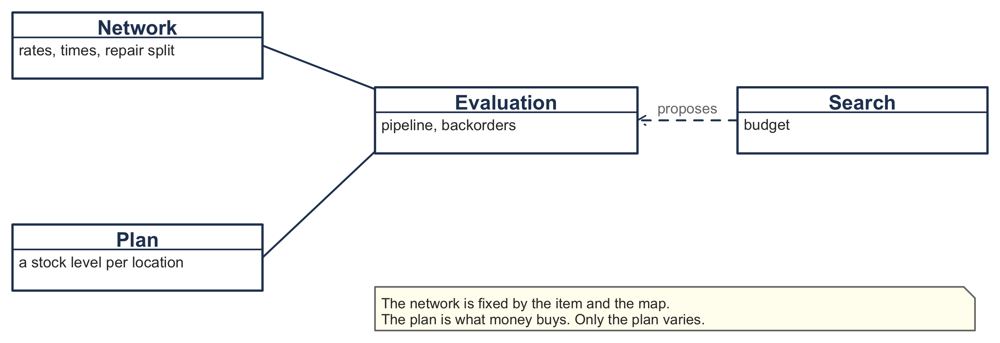
Three candidate nouns fail, and each fails instructively.
Depot looks like a class, and in a diagram it is one. It fails because everything the depot is asked for is a property of a distribution: a backorder level, a variance, a delay that is the first divided by a rate. Giving it a class of its own would give it a home for behavior it does not have. The depot’s stock and its storerooms travel together, so they are one object.
METRIC and VARI-METRIC as two classes is the reading Section 9.8 almost invites, since they have separate names and separate sections. It fails on Equation 9.18. The two models agree on every mean in the chapter, and two classes would let them drift apart in a place where the chapter says they cannot.
A pipeline distribution of our own is the reflex, and it is wrong for the reason Section 8.17.2 gives: the library already has one.
9.11.3 What Each Thing Knows and Does
| Class | Knows | Does |
|---|---|---|
BaseStockItem |
a stock level and a lead time demand distribution | the measures of Section 9.4, and the two moments of its backorder level |
VMBaseItem |
its failure rate, repair split, repair and ship times, and its depot | Equation 9.1; refits its own pipeline from Equation 9.18 and Equation 9.19 |
VMItem |
the depot’s stock and the storerooms beneath it | Equation 9.2 and Equation 9.12; tells every storeroom to refit when anything moves |
VariMetricModel |
a set of items | the totals of Equation 9.23 |
MAFItemData |
one item’s curve of backorders against units | builds the curve, takes the best split per total, and convexifies |
MarginalAnalysisAlgorithm |
a model and a budget | Algorithm 9.3: merges items by delta value until the money runs out |
LagrangeAlgorithm |
a model, a budget and an interval of multipliers | prices money and searches for the price that spends the budget |
Notice that neither METRIC nor VARI-METRIC is a class. VMBaseItem builds a pipeline under either, and which one is a flag rather than a type. That is Equation 9.18 expressed as a design decision.
9.11.4 The Classes
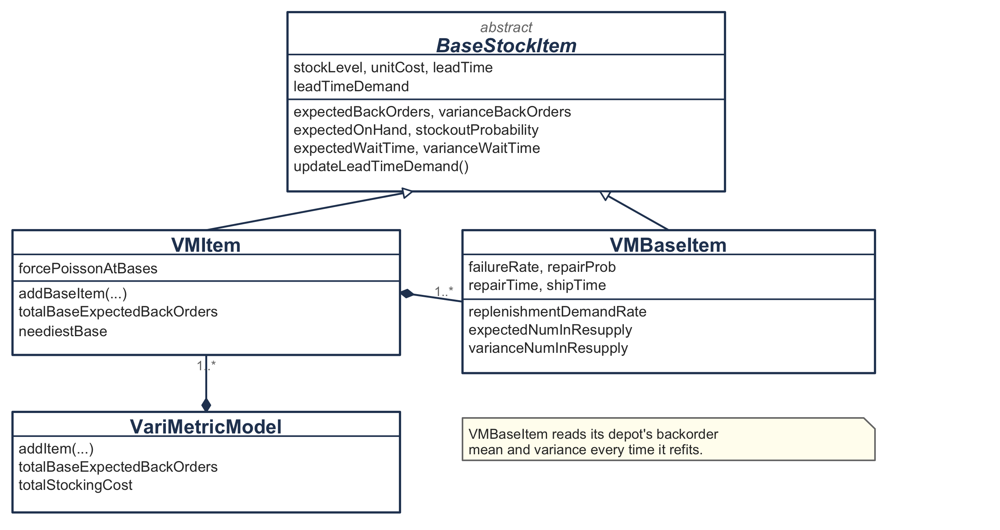
Read the composition and the dependency against each other. A VMItem owns its storerooms, and each storeroom holds a reference back. Setting a storeroom’s repair fraction recomputes \(\lambda_0\) by Equation 9.2, refits the depot’s Poisson, and then refits every storeroom. Setting the depot’s own stock level does the same thing from the other side:
override var stockLevel: Int
get() = super.stockLevel
set(value) {
super.stockLevel = value
updateBaseLeadTimeDemands()
}That mutual reference should not be designed away. Equation 9.18 says a storeroom cannot be described without asking the depot how long it makes people wait. A design in which a storeroom could be changed without the depot noticing would be modeling something this chapter denies.
Mutability also suits what Section 9.9 does with these objects. Algorithm 9.3 moves stock levels thousands of times while searching, and rebuilding the network on every move would be the wrong shape for that.
9.11.5 What the Library Already Supplies
Three pieces of distribution machinery this chapter appears to need turn out to be available already, and recognizing that is most of the design.
The loss functions. Every location holds a LossFunctionDistributionIfc and asks it for firstOrderLossFunction. The measures of Section 9.4 are then written once and answered by whichever family the fit chose, which is Equation 9.5 saying that only the distribution of \(X_j\) matters.
The second moment of a backorder level. Equation 9.20 walks \(E[B^{2}(s)]\) up one stock level at a time, and a worksheet needs that because it has rows and no second order loss function. A program has the reverse. We write the square as \((x-s)^{2} = (x-s)(x-s-1) + (x-s)\) and take expectations over \(x > s\), which gives
\[ E[B^{2}(s)] = 2\,G^{2}(s) + G^{1}(s) \tag{9.25}\]
so Equation 9.19 needs one line:
val varianceBackOrders: Double
get() {
val ebo = expectedBackOrders
val g2 = leadTimeDemand.secondOrderLossFunction(stockLevel.toDouble())
return 2.0 * g2 - ebo * (ebo - 1.0)
}Notice that this does not make Equation 9.20 wasted. The two forms agree at every stock level, and each suits the artifact that carries it. A worksheet has rows and no second order loss function, so it climbs. A program has the loss function and no need of the rows, so it evaluates.
A negative binomial with a fractional number of successes. Section 9.10.6 left the worksheet stuck on \(r = 14.3674\), because its own negative binomial function truncates that argument. The library takes it as a real number, so Equation 9.22 is a constructor call.
9.11.6 Choosing a Family
Equation 9.22 divides by \(1 - p\), and \(p \to 1\) as the variance approaches the mean. A ratio of 1.001 therefore produces a number of successes in the thousands and a fit that is a Poisson in everything but arithmetic.
The fit keys off the variance to mean ratio with a band around one:
val c = variance / mean
return when {
c >= 1.1 -> negativeBinomialOn(mean, variance)
c > 0.9 -> Poisson(mean)
else -> { val scale = variance / mean; Gamma(mean / scale, scale) }
}The third branch is there for a reason. Section 9.8 records that neither Graves nor Sherbrooke could prove the variance always exceeds the mean, so a program that assumed it would be asserting what the literature declines to.
9.11.7 One Class, Two Models
METRIC and VARI-METRIC differ in one place. A VMItem carries a flag, and a storeroom consults it when it refits:
leadTimeDemand = if (depot.forcePoissonAtBases) {
Poisson(expectedNumInResupply)
} else {
fitTwoMoments(expectedNumInResupply, varianceNumInResupply)
}Everything above that line is shared, which is what makes Equation 9.18 structural rather than merely asserted: the two models cannot disagree about a mean, because one object computes it.
A location reports the variance of the distribution in use, not the variance that Equation 9.19 computed. Under METRIC those differ, and a report showing the second while using the first would describe a model nobody ran.
9.11.8 Two Searches, Only One of Them Greedy
Section 9.9 is two searches nested, and the difference between them is the whole of Section 9.9.3.
The inner search is greedy and exact. At a fixed depot stock the storerooms’ backorder functions are convex by Equation 9.10, so handing out units one at a time to whichever location gains most cannot be improved on. MAFItemData fills a table with one row per total and one column per depot level, spreading within a column that way.
The outer step is a minimum, not a search. The best depot level for a given total is the row minimum, and taking minima across rows is exactly where convexity is lost.
The third step is convexification, and it is a lower convex hull reached by repeatedly jumping to whichever later total gives the steepest descent:
var slopeMax = 0.0
for (c in kIndex + 1 until maxRows) {
val s = slope(kIndex, c)
if (s >= slopeMax) { slopeMax = s; kLast = c }
}The totals it skips are the ones Table 9.4 strikes out, and Equation 9.24 is then computed across the jump, over however many units it spans.
neediestBase ranks storerooms by exactly Equation 9.10, the \(G^{0}(S_j) = P\{X_j > S_j\}\) of the next unit. The original code ranked by the stockout probability \(P\{X_j \ge S_j\}\), one index off; the two agree on identical storerooms and need not agree in general, and the port corrects it so that the sentence above stays true.
Notice what is absent. There is no fixed point, no convergence test and no iteration count anywhere in the evaluation. Algorithm 9.1 has no loop and neither does the code, which is Section 9.6.1 cashed in. A model that allowed batching could not say that.
9.11.9 Pricing the Budget Instead of Enforcing It
Algorithm 9.3 is not the only way to spend a budget. A second family of searches solves the same program by relaxation, and the two fail in different places.
Attach a price to money and the problem falls apart into pieces. Let \(\theta\) represent a charge per dollar held. We minimize
\[ w(\theta) = \sum_j \bar{B}_j(S_j) + \theta \left(c_0 S_0 + \sum_j c_j S_j\right) \tag{9.26}\]
At a fixed \(\theta\) the storerooms no longer compete for a budget, so each solves its own problem, and its problem is the newsvendor of Chapter 7: buy while the chance of needing the next unit exceeds its price. Thus
\[ S_j = \min\left\{ S : G(S) \ge 1 - \theta c_j \right\} \tag{9.27}\]
and no search is needed at a storeroom at all. The depot still needs one, because moving it moves every storeroom, so LagrangeAlgorithm enumerates the depot over a window and reads Equation 9.27 off each storeroom at each trial level.
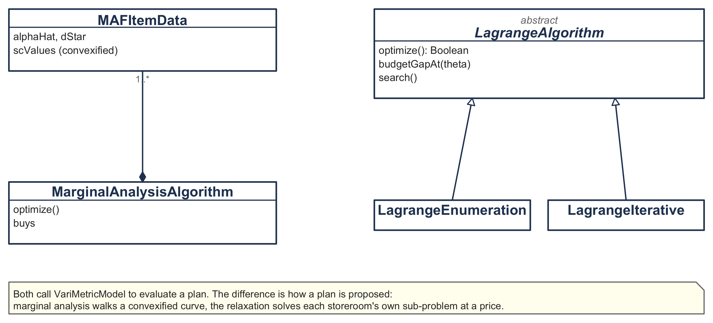
The multiplier lives on a scale set by the unit cost. By Equation 9.27 a storeroom stocks nothing once \(\theta \ge 1/c_j\), so the whole useful range is \((0, 1/c_j)\). For a transformer at $3,800 that is \(2.6 \times 10^{-4}\). Search an interval far above it and the algorithm reports, correctly and uselessly, that no root exists: every candidate multiplier prices money so dearly that no storeroom stocks anything.
On the two-item problem the three searches split two to one. At a budget of $250,000:
| Search | Spend | Storeroom backorders | Depot, transformer | Inside budget |
|---|---|---|---|---|
| Marginal analysis | $247,000 | 2.8792 | 19 | yes |
| Lagrangian, bisection | $247,000 | 2.8792 | 19 | yes |
| Lagrangian, enumeration | $250,800 | 2.6840 | 20 | no, by $800 |
The stock levels are integers, so the cost is a step function of \(\theta\), and near the answer it jumps straight over the budget: at \(\theta = 5.1356 \times 10^{-5}\) the plan costs $250,800 and at \(5.1361 \times 10^{-5}\) it costs $247,000. There is no multiplier that spends exactly $250,000, so a search has to choose a side.
The bisection converges on the jump and returns the side that satisfies the constraint, landing on the same plan marginal analysis found. The enumeration keeps whichever candidate has the smallest absolute gap, and $800 over is closer than $3,000 under, so it takes the infeasible one.
Neither rule is wrong, but the difference matters before you use either. A planner who must not overspend wants the bisection or the marginal analysis. A planner asking what the budget nearly buys is better served by the enumeration, which here reports that $800 more would remove another 0.2 backorders. What you must not do is read the enumeration’s answer as though it respected the budget.
The choice between the relaxation and marginal analysis is a different question again. Marginal analysis returns the whole curve of backorders against money and never overspends, and pays for that by enumerating every plan for every item first. The relaxation returns one plan and gets there without building a curve at all, which is what recommends it when the item count runs into the thousands and the budget is genuinely fixed.
9.11.10 Running the Chapter’s Examples
Section9Listings.kt builds the utility of Example 9.4 and prints every figure the chapter quotes. Run it with
./gradlew run -PmainClass=inventory.multiechelon.Section9ListingsKtThe network is built depot first, with the storerooms hung off it, and the times are given in days at the call site so the conversion is visible:
val item = VMItem(1, 16, 3800.0, days(60.0))
repeat(4) { item.addBaseItem(45.0, days(30.0), 0.3, days(10.0), 4, 3800.0) }Asking the same plan under both models prints
METRIC mu_j 3.2276 var 3.2276 Bbar_j 0.4055 Ibar_j 1.1778 system 1.6218
VARI-METRIC mu_j 3.2276 var 3.9527 Bbar_j 0.4815 Ibar_j 1.2539 system 1.9259Read the two lines against each other. The mu_j column agrees to four decimals and the var column does not, which is Section 9.8’s claim that no mean changes, enforced by the fact that one object produced both.
The allocation prints Table 9.4, including which totals it struck out:
total EBO S_0 reduction kept?
11 17.6154 11 0.9927
12 16.6266 8 0.9888
13 15.6433 9 0.9833 dropped
14 14.6587 10 0.9846
...
19 9.9647 15 0.8842
20 9.1088 12 0.8559 dropped
21 8.2462 13 0.8627Notice that the depot column falls from 11 to 8 at total 12 and from 15 to 12 at total 20. The flushout of Section 9.9.4 and the non-convexity of Section 9.9.3 are the same event seen from two columns.
9.11.11 Where This Leaves Us
Four classes evaluate either model at any plan, two more search a single item’s curve, and three more spend a budget across items, with no iteration anywhere in the evaluation. Every figure this chapter quotes was produced by that code.
Section 9.12 collects what the chapter established.
9.12 Summary
A repairable item is not bought, so one-for-one replenishment is not a policy choice. A failure is simultaneously a demand for a serviceable unit and an arrival of an unserviceable one, and they are the same physical event. Thus the repair pipeline is fed one failure at a time and there is no ordering cost standing between the failure and the induction that waiting could amortize. Chapter 8 presented \(Q = 1\) as a decision the storeroom made, and for a consumable it is one; here the item makes it. That is what allows this chapter to carry two locations without also carrying an order quantity, and it is the whole reason to meet multi-echelon inventory in this setting first.
The population is fixed, so the only question is where the units sit. Figure 9.1 has no arrow entering it and none leaving. Buying more units is a separate and much slower decision, usually taken once when a fleet is fielded. Thus the stock positioning problem of Section 9.1 stops being one question among several and becomes the only one there is.
Palm’s theorem is the chapter’s one exact result, and it asks for a mean and nothing else. With Poisson failures and independently drawn resupply times, the number of units in resupply is Poisson with mean \(\lambda T\) whatever the resupply time distribution may be. That license is worth more here than it looks, because repair time data is the worst data in this business: a shop can usually report an average flow time and rarely more. The condition that fails in practice is the third one. The \(M/G/\infty\) reading makes it explicit that repair capacity never binds, and a shop with three benches and twelve carcasses breaks it. Notice also that Equation 9.3 and Equation B.30 do not contradict one another. The separating question is whether an activity started later can finish earlier, which is a fact about the shop and not about the model.
The depot’s backorders are the storeroom’s lead time. That sentence is the coupling, and Equation 9.13 is the arithmetic of it: divide the depot’s average backorder level by its demand rate and a wait falls out, by Little’s Law, which assumes almost nothing. Section 9.5 obtained the same number twice on twenty-six weeks of one realization, once by following individual requests and once by weighting a level by how long it was held, and the two agreed because they are the same area counted along two different axes. A quantity written \(B(t)\) is averaged over time and not over the rows of a ledger, and a table with more rows in its quiet stretches will mislead anyone who forgets it.
One-for-one ordering buys a system that solves in one pass. The depot’s pipeline contains no storeroom stock level, so the depot is solved first, once, and on its own, and the storerooms follow from the delay it imposes. There is no circle to iterate around, no convergence to test, and no fixed point anywhere in Algorithm 9.1, Algorithm 9.2 or the package of Section 9.11. That is a property of \(Q = 1\), and it does not survive batching.
METRIC gets every mean right and one distribution wrong. The depot’s pipeline really is Poisson, so its backorders are exact; the delay is exact because Little’s Law is; and the storeroom’s pipeline mean is exact for the same reason, with no independence assumed anywhere. What is not earned is the claim that the storeroom’s pipeline is Poisson, because two requests arriving while the depot is empty wait on the same repairs and their delays move together. The error runs the unsafe way, understating backorders and overstating availability, and it was known to the model’s author at the time. Graves (1985) measured it where a planner would feel it, in stock levels rather than reported backorders.
VARI-METRIC changes no mean; it restores a variance that METRIC discarded. Conditional on the depot’s backorder total, the number owed to any one storeroom is binomial, so Equation B.8 supplies two terms: the randomness in which storeroom each backorder belongs to, and the randomness in how many there are. Adding them to the Poisson part gives Equation 9.19, and setting them to zero gives METRIC back. Thus the two models are not rivals but one model read to one moment or to two, which is what Sherbrooke (1986) means by calling METRIC a first-order model. One step rests on evidence rather than proof, and the authors say so: neither Graves nor Sherbrooke could show that the variance always exceeds the mean, so a program should test it rather than assume it.
Two echelons break the convexity that licenses marginal analysis, and the break is where positioning gets answered. Hold the depot’s stock and every storeroom curve is convex, so the greedy rule is exact. Move the depot’s stock and it is not, because one unit there shifts every storeroom at once; the remedy is to strike out the interior points so the procedure buys two units at a time. Reading the same table’s depot column produces flushout: buying one more unit can make it right to move three units already held out of the depot and forward. Thus Section 9.1’s claim is delivered, and delivered in a better form than it was made. The answer to “should this item be forward stocked” is a schedule against the budget rather than a yes or a no; it is not monotone, and no rule of thumb produces it.
Table 9.6 collects the notation, which Appendix A repeats alongside the rest of the book’s.
| Symbol | Meaning |
|---|---|
| \(j\), \(J\) | A storeroom and the number of them; the depot is location \(0\) |
| \(\lambda_j\) | Failure rate at storeroom \(j\), assumed Poisson |
| \(\phi_j\) | Fraction of failures storeroom \(j\) repairs itself |
| \(T_j\), \(T_0\) | Average repair time at storeroom \(j\) and at the depot |
| \(O_j\) | Average order and ship time from the depot to storeroom \(j\) |
| \(\lambda_{j0}\) | \((1-\phi_j)\lambda_j\), the requests storeroom \(j\) sends up |
| \(\lambda_0\) | \(\sum_j \lambda_{j0}\), the depot’s demand rate |
| \(S_j\), \(S_0\) | Stock level at storeroom \(j\) and at the depot |
| \(X_j\), \(X_0\) | Units in resupply for a storeroom and on the depot’s benches |
| \(\mu_j\), \(\mu_0\) | \(E[X_j]\) and \(E[X_0]\), the pipeline means |
| \(\sigma_j^{2}\) | \(\mathit{Var}[X_j]\), which METRIC sets equal to \(\mu_j\) |
| \(\bar{W}\) | Average wait a request suffers at the depot, the same for every storeroom |
| \(B_{0j}\) | Units the depot owes storeroom \(j\), binomial given the total |
| \(f_j\) | \(\lambda_{j0}/\lambda_0\), storeroom \(j\)’s share of the depot’s demand |
| \(E[B^{2}(s)]\) | Second moment of the backorder function, which VARI-METRIC needs |
| \(\mathit{EBO}\) | Total expected backorders at the storerooms, the objective |
| \(\delta(S)\) | Backorders removed per dollar by the next unit, the delta value |
9.13 Exercises
Unless an exercise says otherwise, use the conventions of Section 1.8. Report stock levels as whole units. Times are given in days and rates per year, so divide by 365 before combining them, and show the division. Take the utility of Example 9.4 as the setting: four alike storerooms supplied by one depot, with the item data of Table 4.5 and a carrying charge of 0.25 a year.
9.13.1 Working the Model by Hand
Exercise 9.1 Answer each in a sentence, and say which section settles it.
- True or false: because Palm’s theorem needs only the mean repair time, the variability of a resupply time never affects an inventory model.
- True or false: METRIC and VARI-METRIC report the same expected pipeline at a storeroom.
- A depot’s backorder column in an event ledger reads \(0, 0, 1, 1, 0, 1\) on six rows. A student averages those six numbers and gets \(0.5\). What has been computed, and what was wanted?
- Multiple choice. METRIC’s storeroom backorders are wrong in which direction, and why?
- Too high, because it double counts the depot delay.
- Too low, because it forces the pipeline variance to equal its mean.
- Too low, because it uses the wrong mean for the pipeline.
- Either way, depending on the item.
- Multiple choice. A utility buys one more unit of an item and the optimal depot holding falls. This is
- an arithmetic error, since more stock cannot reduce a stock level.
- possible only when the storerooms differ from one another.
- flushout, and it is a property of the two-echelon trade.
- a sign the convexification step was skipped.
Exercise 9.2 A storeroom stocks a recloser control, which it manages one for one. Failures are Poisson at \(\lambda_j = 18\) a year. Half of them the storeroom rebuilds itself, in an average of 20 days; the other half go to the depot, which ships a replacement in an average of 14 days. Assume for this exercise that the depot never makes anyone wait, so \(\bar{W} = 0\).
- Write down the average resupply duration a failure faces, in days, and use Equation 9.3 to obtain the mean number of units in resupply. Give the unit conversion as a worked chain.
- State the distribution of that number, and give its standard deviation.
- The storeroom holds one control. What fraction of failures find it on the shelf?
- Tabulate \(\bar{B}_j\), \(\bar{I}_j\) and the ready rate for \(S_j = 0, 1, 2, 3\), and check every row against Equation 9.7.
- The shop that rebuilds these controls is rebuilt itself, and the average repair time falls from 20 days to 8 while its variability doubles. Which of your answers change, and which do not?
Exercise 9.3 Run the ledger of Section 9.5 again with one rule changed: the storeroom now rebuilds nothing locally, so every failure sends a carcass and a request to the depot. Everything else is as it was, except that the storeroom is leaner.
Take \(S_j = 1\) and \(S_0 = 2\). The depot repairs a carcass in \(T_0 = 8\) weeks and ships a serviceable unit in \(O_j = 2\) weeks. Failures occur at the storeroom in weeks 1, 4, 7, 10, 13 and 16, and the observation runs for 28 weeks. Follow the convention of Example 8.1: one row per event, at the week it occurs, with the state recorded after that event.
- Build the ledger, carrying \(I_j\), \(B_j\), \(X_j\), \(I_0\), \(B_0\) and \(X_0\). Check Equation 9.11 on every row at both levels.
- Count the depot’s backorder-weeks, weighting each level by how long it was held. State the time average of \(B_0(t)\).
- Obtain the average wait a second way, by following the six requests individually, and reconcile the two.
- The depot is short four separate times and the storeroom’s crews wait only three weeks in total. Explain why those numbers are not the same, in terms of Equation 9.14.
- Rerun part (a) in your head with \(S_j = 2\) instead of 1. How many storeroom backorder-weeks are there now, and what does that say about where a unit is worth more on this item?
Exercise 9.4 The utility also stocks a voltage regulator, one for one, at the same four storerooms. Each storeroom sees \(\lambda_j = 12\) failures a year and rebuilds a fifth of them locally in 45 days. The rest go to the depot, which repairs in \(T_0 = 90\) days and ships in \(O_j = 10\) days. A regulator costs $9,500.
- Obtain \(\lambda_{j0}\) and \(\lambda_0\) from Equation 9.1 and Equation 9.2, and the depot’s pipeline mean from Equation 9.12.
- For \(S_0 = 6, 8, 10\) and \(12\), report the depot’s expected backorders, the variance of its backorders, and the delay in days. Use Equation 9.25 for the variance rather than the recursion.
- The utility will not tolerate a delay above three weeks. What is the smallest depot stock meeting that, and what does holding that much cost the utility each year at a carrying charge of 0.25?
- Notice that the variance of the depot’s backorders falls more slowly than their mean as \(S_0\) rises. Report the variance to mean ratio at each level in part (b), and say what that does to Equation 9.19.
Exercise 9.5 Continue with the regulator of Exercise 9.4, at a depot stock of \(S_0 = 8\).
- Obtain the part of a storeroom’s pipeline that Theorem 9.1 covers exactly, and then \(\mu_j\) and \(\sigma_j^{2}\) from Equation 9.18 and Equation 9.19. Report the variance to mean ratio.
- Fit the negative binomial of Equation 9.22 and report \(p\) and \(r\). Say why a worksheet cannot evaluate this fit with its own negative binomial function.
- Report \(\bar{B}_j\) under both models for \(S_j = 1, 2\) and \(3\), and the ratio of the two at each level.
- The ratio grows with \(S_j\). Explain why, in terms of which part of the distribution a backorder calculation is reading.
- The utility holds \(S_j = 2\) at each storeroom. State the total expected backorders across the four under each model, and say which figure you would put in front of a manager and why.
Exercise 9.6 Equation 9.20 and Equation 9.25 compute the same quantity by different routes.
- Prove Equation 9.25 by writing \((x-s)^{2} = (x-s)(x-s-1) + (x-s)\) and taking expectations over \(x > s\).
- For the regulator’s depot of Exercise 9.4 at \(S_0 = 8\), evaluate \(E[B^{2}(8)]\) both ways: walk Equation 9.20 up from \(s = 0\), and evaluate Equation 9.25 directly. Report both to four decimals.
- Section 9.10 uses the recursion and Section 9.11 uses the closed form. Say what each has that the other does not, and why neither choice is a mistake.
- The recursion subtracts. At what sort of stock level would you expect it to lose precision, and how would you check?
9.13.2 Using the Software
Exercise 9.7 Example 9.6 priced a repair contract on the transformer. Do the same for the voltage regulator of Exercise 9.4, using inventory.multiechelon rather than the workbook.
Build the network with VMItem and four calls to addBaseItem, holding \(S_0 = 8\) and \(S_j = 2\).
- Report the system’s storeroom backorders as it stands.
- The depot’s shop offers to cut \(T_0\) from 90 days to 70. Report the new delay and the new storeroom backorders.
- Find the smallest depot stock that matches the contract’s backorders without it, by raising \(S_0\) and re-reading the model.
- Price the contract as an annual figure, using the carrying charge of 0.25.
- Compare the answer with the transformer’s $5,700 of Example 9.6, and say what about the two items makes them differ.
Exercise 9.8 Use MAFItemData to build the efficient curve for the regulator of Exercise 9.4 on its own, over depot levels 0 to 20 and totals up to 30.
- Print the total, the best depot level, the expected storeroom backorders and the reduction, for totals 4 through 16.
- Identify every total the convexification drops, and for each one show the chord test: the plan lies above the straight line joining its neighbors.
- Identify every flushout, meaning a total at which the best depot level falls.
- The regulator costs $9,500 and the transformer $3,800. Without running the merge, say which item the first dollar buys, and check your answer against Equation 9.24 at a stock level of zero for each.
9.13.3 Using the Workbook
Exercise 9.9 Open Chapter9Models.xlsx at the Storeroom sheet, which carries the transformer of Example 9.4.
- With
Depot!B16at 16, record \(\mu_j\), \(\sigma_j^{2}\) and their ratio from cellsB22,B23andB24. - Walk
Depot!B16from 0 to 26 in steps of 2 and record the ratio at each. Plot it against the depot stock level. - Section 9.8.4 says the software fits a negative binomial only when that ratio exceeds 1.1. Over which depot stock levels would it use one, and which family does it use outside that range?
- The curve you plotted rises and then falls. Explain both ends: why the ratio is near one when the depot is nearly empty, and why it is near one again when the depot is generous.
9.13.4 Reading the Literature
Exercise 9.10 Read Sherbrooke (1986), which is nine pages, and Graves (1985) if you can obtain it.
- Sherbrooke says the understatement of base backorders was known when METRIC was published. Quote the sentence and say why it was judged acceptable at the time.
- Graves measures the improvement in stock levels rather than in reported backorders. State the two percentages, and say why measuring it that way is more useful to a planner.
- Sherbrooke qualifies those percentages immediately. Quote the qualification and explain what it means for a utility deciding whether to move from METRIC to VARI-METRIC.
- One step of VARI-METRIC rests on a claim the authors could not prove. State it, say where it is used, and say what a program should do about it.
- In a paragraph, say what you would need to measure on a real range of items to decide whether the change is worth making.